流程攻略#
每章依序整理：劇情提要（輕度）、地圖路線、心燈與支線、寶箱與祕密、商店、謎題解法、推薦等級，以及每一場頭目戰。標有「劇透警告」的段落預設收起。
序章 夢#
概要#
黑色大海上漂著一座燈籠搭成的橋。九份燈籠舖學徒沈星河在夢中醒來，沿著燈橋一路點燈、擊退海霧魂，走向橋盡頭那位白衣少女。
| 項目 | 內容 |
|---|---|
| 推薦等級 | Lv1（本章結束時約 Lv2） |
| 隊伍 | 沈星河（單人） |
| 地圖 | 夢境・燈橋 |
| 寶箱／商店 | 無 |
序章是操作教學關。夢境中有三條特殊規則，先記在心裡：
- 不能存檔、不能開選單：按選單鍵只會出現「……夢裡好像打不開行囊。」，所以也沒有道具可用。
- 不會 Game Over：全滅後星河會在原地完全回復，說一句「……還不能在這裡倒下。」，然後重新開打。
- 不能逃跑：夢中所有戰鬥都無法逃走。
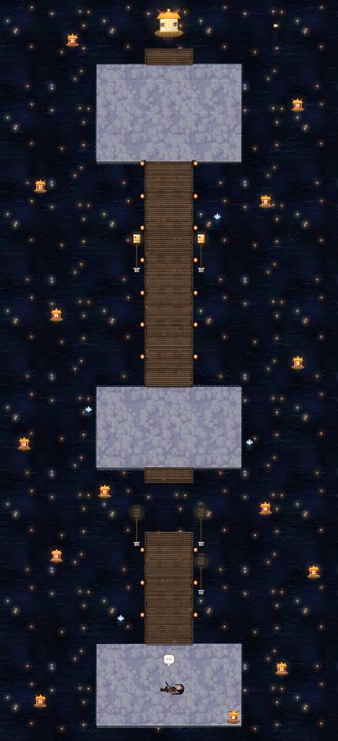
流程#
燈橋是一條由南往北的直線，沿途有三座雲台，依序是起點、中段、北端。
- 起點雲台（甦醒）：開場旁白結束後，鏡頭從遠方的白光一路拉回星河。星河醒來後會跳出「移動」教學。
- 漂流的魂（可略過）：起點雲台北側有第一個漂流的魂。靠近任何可互動的東西時，會跳出「對話／調查」教學。
- 第一根燈柱 L1：燈柱位於起點北方的橋上，在橋的右側。調查後選「點亮它」，星河會用指尖點燃燭芯。
- 選「不管它」也沒關係。L1 沒點亮之前，想往北走會被星河自己擋回來（「沒點的燈，看了就渾身不對勁。」）。
- 點燈後海霧湧起，觸發第一場戰鬥：海霧魂 ×1，並跳出戰鬥基本教學。用「攻擊」打兩三下就能解決。
- 斷橋：繼續往北，會發現前方的橋斷了，橋身沉在黑海裡。斷口兩側各有一根燈柱。
- 左燈柱 L2：調查即點亮，海面會浮起一塊發光的橋板，但這時還不能走。
- 右燈柱 L3：伸手點燈時又會冒出兩隻海霧魂，觸發第二場戰鬥：海霧魂 ×2，並跳出「選擇目標」教學。打贏後燈自動點亮。
- L2、L3 的點燈順序隨意。三盞燈都亮起後，海裡的魂燈會把三排橋板托出海面，斷橋就此接上。這時星河的 HP／MP 全滿（「燈火的暖意流遍全身。」）。
- 中段雲台：這裡有兩個漂流的魂（左、右各一），可以順路聊聊。
- 藍色燈火（0-6）：往北走到兩根已點亮的燈柱之間，燈火會轉成冰冷的藍色，觸發第三場戰鬥：大海霧魂＋海霧魂 ×2，並跳出「仙術／防禦」教學。打法見〈頭目戰〉。
- 北端雲台（白衣少女）：一路往北，進入劇情。少女哼著渡魂謠，燈橋在星河身後一節節沉入海中。
- 劇情結束後星河墜入深海，然後在燈籠舖的床邊摔醒，直接進入第一章。
劇透警告：橋盡頭的少女說了什麼
少女始終沒有回頭。她說：「你又來了。」「每一次，你都走這座橋。每一次，橋都會斷。」遠方的大燈閃爍欲熄，她說自己「要回去了」。星河手腕上的紅線和少女髮間的紅線同時亮了一下，她才微微側過臉：
「星河……這一次，別再來找我了。」
這首歌的歌詞（「燈一盞，渡一人……」）會記為第一段歌詞殘片。
心燈與支線#
序章沒有心燈，也沒有支線。夢中四個「漂流的燈」可以和它們對話，各有初次與再次的台詞，不影響結局，但很有味道：
| 位置 | 魂 | 內容 |
|---|---|---|
| 起點北側橋上（左邊） | 渡海的阿伯 | 「六死三留一回頭……少年仔，你講，我是哪一個？」 |
| 中段雲台・左 | 溫柔的婦人 | 發現星河「身上沒有燈」。 |
| 中段雲台・右 | 小孩子 | 對話兩次，第二次他會問「我可以跟著你一下嗎？」，之後就一路跟在星河身後。到了藍色燈火那裡，他會被嚇得飄走。 |
| 北段橋上（右邊） | 老漁夫 | 再對話一次，會提到「那個白衫的姑娘，在前頭站好久了」。 |
劇透警告：婦人的那句話
「每個人都有一盞的……你的，在哪裡呢？」這是全作最早的伏筆之一。
寶箱與秘密#
序章沒有寶箱，也沒有七仙蕈。
- 北段橋上那兩根一開始就亮著的燈柱（L2、L3 再往北）可以調查：「已經點亮的燈柱。是誰點的呢……」。觸發藍色燈火之後再調查，台詞會改變。
- 在夢中按選單鍵或取消鍵，會出現專屬吐槽。
商店#
無。
謎題與小遊戲#
斷橋三燈：L1 已經點亮的前提下，再把斷口左右的 L2、L3 也點亮，橋就會接起來。L3 一定會先觸發一場戰鬥，打贏後才會點亮。三盞燈全亮的瞬間全員回滿。
頭目戰#
| 敵人 | Lv | HP | 屬性 | 弱點 ×1.5 | 抗性 ×0.5 | 經驗 | 錢 | 掉落 |
|---|---|---|---|---|---|---|---|---|
| 海霧魂 | 1 | 38 | 水 | 火・土 | — | 2 | 5 | 芋圓湯 20% |
大海霧魂（0-6，附帶海霧魂 ×2）
| 項目 | 數值 |
|---|---|
| 等級／HP | Lv2／84（海霧魂：Lv1／38） |
| 屬性 | 水 |
| 弱點 | 火（星河的「螢火斬」傷害 ×1.5） |
| 招式 | 陰寒之觸（單體水屬性術法）；聚霧（頭上出現紅色「！」，下一回合放出霧湧：我方全體水屬性術法，威力 1.3） |
| 推薦 | Lv1 即可。裝備就是初始的竹劍、粗布短衫、草鞋、紅線手環 |
機制：大海霧魂在第 2 次行動時一定會「聚霧」，下一次行動就放出霧湧。之後每次行動也有 40% 機率再聚霧。第一次聚霧時，遊戲會跳出提示，教你選「防禦」。防禦能讓本回合受到的傷害減半，還能累積一點劍意。
打法：
- 第 1 回合：先用「攻擊」收掉一隻海霧魂（HP 38）。小怪會用「海霧」降低你的能力，越早清掉越好。
- 大海霧魂頭上一出現「！」：下一個行動選防禦，硬吃霧湧的傷害會減半。
- 霧湧放完後：對大海霧魂用螢火斬（MP4，火屬性打中弱點）。星河 MP 20，可以連放四到五次。
- 再看到「！」就再防禦一次，其餘回合照樣螢火斬或普攻，剩下那隻海霧魂最後收掉。
就算輸了也只會原地重打，HP 全滿。這一戰給 46 點經驗，打完星河就會升上 Lv2。
小技巧#
- 小孩子的魂要對話兩次才會跟著你走。第一次對話只會說「前面好暗喔」。
- 三盞燈全點亮時會全員回滿，所以第二場戰鬥打完不必擔心血量。
- 第三場戰鬥前沒有回復點，但輸了會自動回滿重來，可以放心練習「看到『！』就防禦」的節奏。這招在第一章的工頭魂和之後所有頭目戰都非常重要。
- 序章不能存檔，但時間很短，約 10 分鐘。第一章開頭就能存檔了。
第一章 九份燈火#
概要#
七月十四，九份。燈籠舖學徒星河跑完早上的差事，又鑽進舊礦坑救狗，傍晚跟著陳伯下山到雞籠看放水燈。誰知道水燈全部倒漂回岸，一盞古老的白色水燈頭上，躺著一位陌生的少女。
| 項目 | 內容 |
|---|---|
| 推薦等級 | Lv2～5（工頭魂 Lv3、墨鴉／水鬼王 Lv4 以上） |
| 隊伍 | 沈星河（礦坑一路單人）→ 1-15 起 白芷 加入；水鬼王戰 陳伯 以「客人」身分參戰 |
| 主要地圖 | 九份、舊金礦坑（上層／下層）、雞籠街・主普壇、八斗子海岸・望海巷 |
| 心燈 | ① 阿土伯的懷錶 ② 阿黃回家 |
九份的時段：本章的九份會隨劇情推進換時段，NPC 的位置、台詞和能接的支線也跟著變。
| 時段 | 何時開始 |
|---|---|
| 清晨 | 開場 |
| 正午 | 阿黃跑進礦坑後 |
| 午後 | 從礦坑出來後 |
| 黃昏 | 出發去雞籠 |
| 子夜 | 水鬼夜襲 |
| 翌晨（七月十五） | 夜襲結束後的早上 |
重要：午後找陳伯選「真的要出發了」之後，九份的支線會暫停到翌晨才恢復。兩盞心燈在午後和翌晨都能完成，不必急。
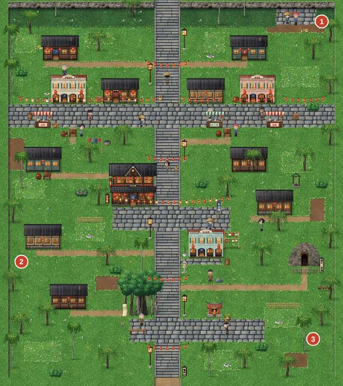
流程#
1-1～1-3 清晨：陳伯的三件差事
- 閣樓：星河摔下床後，房間右側有一個寶箱（草仔粿 ×2）。床可以「睡一下」完全回復，之後也能回來用。
- 一樓店面：陳伯交代三件差事，並給你 100 文、「茶樓的燈籠」和「供品籃」。三件差事順序隨意：
- 茶樓聽雨樓（鎮中央，豎崎路西側）：一進門就會自動交貨，鄭頭家給跑腿錢 30 文。
- 雜貨店阿財商行（北邊暗街仔西側）：找阿財買燈油。他算你 38 文，同時跳出商店教學。
- 福德祠（鎮的南端，大榕樹旁）：調查福德祠，和添丁伯一起拜土地公。香煙會詭異地飄向海邊。結束後獲得 平安符，並跳出選單教學。
- 燈籠舖門口有石燈籠記錄點，之後還有很多個。穿過地圖出入口時，遊戲也會自動存檔。
- 三件做完後回店裡找陳伯報告。劇情跳到正午，小金衝進來說阿黃跑進了舊礦坑。陳伯丟給你一盞提燈，有了它，礦坑裡的視野會變大。
1-5～1-8 舊金礦坑
- 到鎮東的舊坑口，封坑的木板已被撞破，觸發劇情後進入礦坑。
- 礦坑上層：入口大廳有記錄點（燈龕）。地圖上看得到的蝙蝠、礦工魂就是敵人，從背後或側面先按確認鍵，可以「先制攻擊」。
- 中段的鐵軌區是礦車謎題，詳見〈謎題與小遊戲〉。主線只需要：
- 把左邊轉轍器 A 扳到「東」，右邊轉轍器 B 扳到「北（大坑）」。
- 推西邊的礦車，撞開北邊的坍方石堆。
- 北上找到梯子，下到礦坑下層。東側斜坡有記錄點，建議在這裡存檔，因為往下走進金脈大廳就會觸發頭目戰「工頭魂・金貴仔」。
- 戰後，老礦工阿土伯的魂會拜託你一件事（心燈①），阿黃也會開始跟著你。走到大廳東南角的吊籠，選「坐上去」，直接回到坑口。
- 回到地面，阿黃撲進小金懷裡，時間變成午後。這時可以接兩盞心燈，詳見〈心燈與支線〉。
1-9～1-12 黃昏：雞籠中元祭
- 準備好之後回店裡找陳伯，選「出發去雞籠」→「真的要出發了」。
- 出發前一定要做好夜戰準備。今晚會連打三場戰鬥，中途不能休息，回到九份時多數店也關門了。準備清單見〈商店〉。
- 雞籠街・主普壇：自由逛街。這裡有三個雞籠限定攤位，見〈商店〉。
- 東側的長明宮布施攤，可以和墨鴉對話。他會問你要不要長明燈符：
| 選擇 | 結果 |
|---|---|
| 收下 | 1-22 時陳伯會叫你把符丟進火裡，有一段專屬劇情 |
| 不用了 | 陳伯會稱讚你「總算有聽話」 |
這個選擇不影響戰鬥和結局。
- 港邊的小女孩小雨會問你要在燈上寫誰的名字，兩個選項都只影響台詞。
- 主普壇前有記錄點。
- 逛夠了就到港邊大路找陳伯，選「可以出發了」，跟著水燈頭隊伍來到八斗子。
- 八斗子：找海邊的陳伯放水燈，要在燈上寫字，三個選項只影響對話：
- 「爸爸媽媽」
- 「沈」
- 「陳伯長命百歲」
劇透警告：水燈倒漂之後
所有水燈突然轉成藍色，往岸邊漂回來。一座古老的白色水燈頭逆流而來，卡在礁岩盡頭，燈上躺著一位少女。
- 往東邊的礁岩小徑走（原本被擋住，現在可以過去了）。小徑旁有兩隻沙蟹精在晃（水屬性、防禦高，打倒後不會重生），不想打可以繞開。
- 走上礁岩時會被遲疑的水鬼抓住腳踝，觸發一場戰鬥。它前兩回合什麼都不做，很好打。
- 走到礁岩盡頭，抱回少女。她手裡的玉牌上刻著「白芷」兩個字。
1-14～1-21 子夜：水鬼夜襲
- 回到燈籠舖，林大夫來看診，陳伯揹著兩個布包出門。子夜時白芷醒來，接著小金被「海」叫走了。白芷加入隊伍，加入時的等級與星河相同。
- 夜襲中的九份：
- 民宅與商店全部閂門，雜貨店、醫館都進不去。
- 豎崎路上有 5 組水鬼／鬼燈籠在巡邏，打倒後不會重生。
- 燈籠舖後房陳伯的床可以「躺一下」完全回復，是夜戰唯一的回復點。
- 沿豎崎路往北（下山）走，依序觸發：
| 位置 | 劇情 | 戰鬥 |
|---|---|---|
| 茶樓前 | 屋簷下的燈籠變成鬼燈籠 | 鬼燈籠 ×3，火屬性，用白芷的「水月」 |
| 暗街仔 | 阿財從窗口丟下鹽米 ×5 | 水鬼 ×2＋鬼燈籠 ×1 |
| 石階盡頭（最北） | 連續三戰，中途完全不能補給 | 水鬼 ×3 → 頭目「墨鴉」 → 頭目「水鬼王」（陳伯參戰） |
走到石階盡頭之前，先回陳伯的床躺一下，把 HP／MP 補滿再上去。
- 戰鬥中陳伯會把寶劍「螢火」交給星河並自動裝備（攻擊 +12、火屬性）。星河的竹劍則在墨鴉戰後被打斷，變成重要物品「斷掉的竹劍」。
劇透警告：陳伯的真實身分
陳伯用刻滿符文的木槳擋下水鬼王的手，自稱「引魂人陳渡」。戰後，墨鴉的黑羽射向白芷，陳伯撲上去替她擋下，身受重傷。
1-22～1-24 翌晨：出發
- 陳伯在後房向星河說明「引魂人」與「彼岸燈」的事，交給你重要物品引魂令，並指示你經霧林、平溪前往觀音山太虛觀，找清虛真人。最後的選項（「我去。」／「我……我怕。」）只影響台詞。
- 七月十五清晨。依目標去阿柑芋圓，白芷第一次吃到芋圓，阿柑姨送你芋圓湯 ×3。
- 接著去聽雨樓，茶樓裡的兩隻貓會選中白芷和星河，麻糬和芋圓從此跟著你。沒去茶樓的話，南邊的出口會被擋住。
- 翌晨的九份有不少道別禮物，見〈小技巧〉。
- 一切就緒後，走到鎮南端的上平台，陳伯在老榕樹下送行，給你盤纏 300 文。第一章結束。
心燈與支線#
心燈① 阿土伯的懷錶
- 接取：打倒工頭魂後，阿土伯的魂會拜託你。也可以在打工頭魂之前就先找到懷錶，阿土伯看到時台詞會不一樣。
- 步驟：
- 在礦坑上層把轉轍器扳成 A＝東、B＝東，推礦車撞開東邊的石堆。詳見〈謎題與小遊戲〉。
- 進入東側小房間，從梯子下到礦坑下層的西側坑道。
- 往南是一條強風坑道，直接走會被風吹回來。先依「正」字的筆順點亮三盞壁燈，風就會停。順序見〈謎題與小遊戲〉。
- 坑道盡頭是坍方小房間。調查壓扁的便當盒（只有台詞），再調查石縫，取得阿土伯的懷錶。
- 午後或翌晨，把錶交給阿土嬸。午後她在自己家裡（九份西北角），翌晨在家門口。
- 報酬：心燈「阿土伯的懷錶」、麥芽糖 ×5。
心燈② 阿黃回家
- 接取：從礦坑出來後（午後），和小金家門口（九份東北）的小金對話。
- 步驟：
- 和旁邊的阿旺對話，選「阿黃是阿土伯的狗！」。他要有人作證。
- 去阿土嬸家找阿土嬸，她答應出面作證。
- 回到小金家門口，自動觸發劇情。阿土伯的魂會在坑口和阿黃道別。
- 報酬：心燈「阿黃回家」、小金的金仔石（飾品，運 +5）。
- 兩盞心燈的完成順序會讓阿土伯的告別台詞略有不同。兩盞都完成後，阿土伯就能安心離開。
支線 醒木失竊記（不算心燈）
- 接取：交完茶樓的燈籠之後，再進一次聽雨樓，黑貓「黑糖」會叼走阿炳伯的醒木。清晨、正午、午後都可以觸發。
- 步驟：
- 黑糖先停在雜貨店那一帶（九份西北）。對話選「抓住牠！」，牠會逃走。
- 牠跑到暗街仔的晾衣竿旁。再追一次，星河頭上會被罩一件內衫。
- 牠最後在福德祠台階睡午覺。硬搶沒用，要用小魚乾換。小魚乾可以在阿財商行買（10 文）；清晨、正午時豎崎路上的漁夫阿水也會免費送你一條。
- 把醒木還給聽雨樓的阿炳伯。
- 報酬：說書折扇（飾品，法 +2、運 +3）、烏龍茶 ×2。之後阿炳伯的「聽故事」清單會多一段〈國姓爺與鶯歌石〉。
寶箱與秘密#
| 地圖 | # | 座標 (x, y) | 內容 | 備註 |
|---|---|---|---|---|
| 陳記燈籠舖・閣樓 | 1 | (10, 4) | 草仔粿 ×2 | |
| 九份 | 1 | (37, 2) | 番薯 ×3 | |
| 九份 | 2 | (2, 30) | 鹽米 ×2 | |
| 九份 | 3 | (36, 39) | 烏龍茶 | |
| 舊金礦坑・上層 | 1 | (4, 3) | 金創藥 ×2 | |
| 舊金礦坑・上層 | 2 | (37, 19) | 礦工頭巾 | 開啟時有事件 |
| 舊金礦坑・上層 | 3 | (36, 31) | 金砂 ×2 | |
| 舊金礦坑・上層 | 4 | (23, 37) | 草仔粿 | |
| 舊金礦坑・下層 | 1 | (6, 4) | 鹽米 ×3 | |
| 舊金礦坑・下層 | 2 | (10, 26) | 烏龍茶 ×2 | |
| 舊金礦坑・下層 | 3 | (24, 10) | 金創藥 |
座標以地圖左上角為 (0, 0)，向右為 x、向下為 y；「#」對應地圖圖片上的寶箱編號。
- 礦工頭巾（礦坑上層東側小房間）：要先用礦車撞開東邊石堆才拿得到。打開時會跳出裝備教學。它是本章前期最好的頭部裝備（防 +4、運 +2），比斗笠還好。
- 藏私房錢的甕：九份暗街仔南側的一個甕，調查可得 20 文。不算寶箱，很容易漏掉。
- 金砂：礦坑上層寶箱 2 份＋工頭魂戰後 3 份，共 5 份。每份可賣 50 文，是第一章的重要財源。
- 本章沒有七仙蕈。
商店#
聽雨樓
| 商品 | 類別 | 價格（文） | 效果／能力 |
|---|---|---|---|
| 烏龍茶 | 道具 | 45 | 我方單體：真氣 +40 |
| 茶葉蛋 | 道具 | 15 | 我方單體：生命 +60 |
阿柑芋圓
| 商品 | 類別 | 價格（文） | 效果／能力 |
|---|---|---|---|
| 芋圓湯 | 道具 | 20 | 我方單體：生命 +80，真氣 +10 |
| 芋圓冰 | 道具 | 35 | 我方單體：生命 +40，真氣 +25 |
阿財商行
| 商品 | 類別 | 價格（文） | 效果／能力 |
|---|---|---|---|
| 草仔粿 | 道具 | 40 | 我方單體：生命 +150 |
| 金創藥 | 道具 | 30 | 我方單體：生命 +120 |
| 解毒草 | 道具 | 12 | 我方單體：解除中毒 |
| 鞭炮 | 道具 | 25 | 敵全體：火屬性傷害 40 |
| 鹽米 | 道具 | 18（特價，原價 20） | 敵單體：土屬性傷害 70 |
| 番薯 | 道具 | 8 | 我方單體：生命 +40 |
| 小魚乾 | 道具 | 10 | 我方單體：生命 +20 |
| 烏龍茶 | 道具 | 45 | 我方單體：真氣 +40 |
| 夾棉短襖 | 衣裝 | 50 | 防+6 |
| 斗笠 | 頭飾 | 30 | 防+3 |
| 布鞋 | 鞋履 | 40 | 防+2 速+2 |
| 九份竹笛＊ | 武器 | 60 | 武+3 法+11（白芷） |
＊ 只在特定時段或劇情進度後上架。
回春堂
| 商品 | 類別 | 價格（文） | 效果／能力 |
|---|---|---|---|
| 金創藥 | 道具 | 30 | 我方單體：生命 +120 |
| 解毒草 | 道具 | 12 | 我方單體：解除中毒 |
| 香包 | 道具 | 40 | 我方單體：解除沉睡・封印・定身・幻境 |
| 還魂香＊ | 道具 | 150 | 倒下的同伴：復活（30% 生命） |
＊ 只在特定時段或劇情進度後上架。
鼎邊趖
| 商品 | 類別 | 價格（文） | 效果／能力 |
|---|---|---|---|
| 鼎邊趖 | 道具 | 45 | 我方單體：生命 +160 |
天婦羅
| 商品 | 類別 | 價格（文） | 效果／能力 |
|---|---|---|---|
| 天婦羅 | 道具 | 30 | 我方單體：生命 +80，真氣 +10 |
吊飾攤
| 商品 | 類別 | 價格（文） | 效果／能力 |
|---|---|---|---|
| 水燈吊飾 | 佩飾 | 60 | 運+3 防+1 |
| 香火袋 | 佩飾 | 90 | 法+2；免疫封印 |
| 平安符 | 道具 | 80 | 我方單體：解除中毒・沉睡・封印・定身，護盾 3 回合 |
粿婆的攤子
| 商品 | 類別 | 價格（文） | 效果／能力 |
|---|---|---|---|
| 草仔粿 | 道具 | 36（特價，原價 40） | 我方單體：生命 +150 |
| 紅龜粿 | 道具 | 30 | 我方單體：生命 +120 |
| 商店 | 位置 | 主要商品 |
|---|---|---|
| 阿財商行 | 九份北側暗街仔西 | 消耗品、鹽米、防具。翌晨鹽米降為 18 文，並寄賣白芷的九份竹笛 |
| 回春堂 | 九份北側暗街仔東 | 藥品。午後與翌晨才賣還魂香 |
| 聽雨樓 | 九份中央 | 烏龍茶、茶葉蛋 |
| 阿柑芋圓 | 九份北側 | 芋圓湯、芋圓冰 |
| 粿婆的攤子 | 暗街仔中央 | 草仔粿（36 文，比雜貨店便宜）、紅龜粿 |
| 雞籠夜市 | 雞籠街 | 鼎邊趖、天婦羅、吊飾攤（水燈吊飾、香火袋、平安符） |
採購建議（依 docs/BALANCE.md 的設定）：
- 進礦坑前：星河換上夾棉短襖（50 文）、斗笠（30 文）、布鞋（40 文），再帶草仔粿和金創藥各 3 個。錢不夠就先買短襖。草仔粿去粿婆那裡買比較便宜。
- 去雞籠前：
- 再買一雙布鞋給白芷。她加入時店都關門了，鞋子要事先買好。
- 賣掉金砂（5 份 250 文），換成 2 個香火袋（雞籠吊飾攤，90 文）。墨鴉的「長明咒印」會封印對手，而且專挑白芷。香火袋能讓人免疫封印，是本章最關鍵的飾品。
- 夜戰補給：在雞籠買 3～4 碗鼎邊趖（回復 160，雞籠限定）；再帶 2 杯烏龍茶給白芷回真氣。阿財丟給你的鹽米也留著打水鬼王。
- 翌晨：九份竹笛（60 文，法 +11）比白芷的玉笛強很多，出發前一定要買。
謎題與小遊戲#
礦車與轉轍器（礦坑上層）
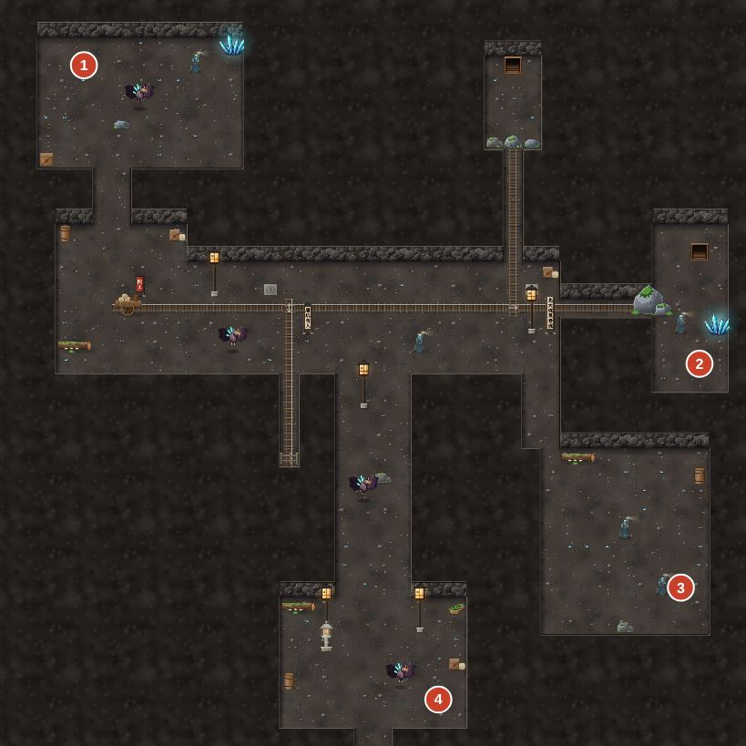
鐵軌從西邊的礦車出發往東，中間有兩個轉轍器。轉轍器 A 在第一個岔口，B 在第二個岔口，地上的粉筆箭頭會顯示目前方向。
| 轉轍器 A | 轉轍器 B | 礦車撞到 | 結果 |
|---|---|---|---|
| 南（初始） | 不論 | 南邊廢坑的擋車木 | 彈回原處，什麼也沒發生 |
| 東 | 北 | 北邊坍方石堆 | 主線：打通往大坑的通道，梯子在最北端 |
| 東 | 東（初始） | 東邊大石頭 | 支線：打通東側小房間（礦工頭巾＋往下層西側坑道的梯子） |
最有效率的順序：
- A 扳到「東」，B 保持「東」，推車 → 打通東邊。
- 再把 B 扳到「北」，推車 → 打通北邊。
礦車撞完會自己溜回原位，可以重複推。兩邊都打通後再推，只會看到「礦車的輪子歪了」。
風洞壁燈（礦坑下層西側）
坑道東側牆上有三盞熄滅的壁燈，旁邊各有粉筆記號：
| 位置 | 記號 |
|---|---|
| 北 | 「下」 |
| 中 | 「一」 |
| 南 | 「丅」 |
阿土伯做記號用「正」字的筆順。正確順序是：
「一」（中）→「丅」（南）→「下」（北）
順序錯了，一陣冷風會把三盞燈全部吹熄，要從頭再點。錯兩次後，星河會自己想起這條提示。三盞全亮後風就停了，可以往南走。
頭目戰#
| 頭目 | Lv | HP | 屬性 | 弱點 ×1.5 | 抗性 ×0.5 | 招式 | 階段 | 同場敵人 | 經驗 / 錢 | 類型 |
|---|---|---|---|---|---|---|---|---|---|---|
| 工頭魂・金貴仔 | 3 | 457 | 金 | 火 | — | 十字鎬（土）、金砂迷眼、鶴嘴鋤重擊（金） | 50% 回復15% | — | 68 / 120 | 頭目 |
| 墨鴉 | 5 | 953 | 金 | 火 | — | 鴉羽紛飛、長明咒印、黑羽旋風、斬擊、本使者不陪你玩了 | 50%、25%；剩 2% 時劇情結束 | — | 127 / 155 | 頭目 |
| 水鬼王 | 5 | 858 | 水 | 火・土 | — | 抓交替（水）、黑水倒灌（水）、利爪、再生之手、百面哀嚎 | 50% 變身；剩 2% 時劇情結束 | 水鬼之手×2 | 109 / 104 | 頭目 |
數據表
| 章 | 頭目 | Lv | HP |
|---|---|---|---|
| 第一章 | 工頭魂・金貴仔 | 3 | 457 |
| 第一章 | 墨鴉 | 5 | 953 |
| 第一章 | 水鬼王 | 5 | 858 |
工頭魂・金貴仔（1-7）
| 項目 | 內容 |
|---|---|
| 等級／HP | Lv3／457 |
| 屬性 | 金（火剋金，螢火斬 ×1.5；木屬性攻擊只剩 0.7 倍） |
| 免疫 | 睡眠、暈眩、幻境 |
| 推薦 | Lv3 以上（星河單人）。夾棉短襖、斗笠、布鞋、紅線手環；草仔粿 ×3、金創藥 ×3 |
| 招式 | 效果 |
|---|---|
| 十字鎬 | 單體土屬性物理攻擊，威力 1.35，最常用 |
| 金砂迷眼 | 我方全體，50% 機率速度下降 2 回合 |
| 高舉鶴嘴鋤 → 鶴嘴鋤重擊 | 第 2 次行動必定高舉（頭上出現「！」），下一次行動打出單體金屬性重擊，威力 1.7。第 4 次行動起，每次有 30% 機率再高舉 |
| 剩一半 HP 時 | 大喊「攏是我的！」，回復 15% HP，攻擊 +30%，持續 3 回合 |
打法：
- 開場阿土伯會提示「金驚火」。之後基本上就是螢火斬連發：星河 MP 25，可以放 6 次。
- 工頭魂頭上一出現紅色「！」，下一個行動就選防禦，鶴嘴鋤重擊的傷害會減半。序章大海霧魂的節奏在這裡完全通用。
- 星河 Lv3 學會的「護燈訣」可以提升自身防禦。它進入狂暴（攻擊 +30%）的那 3 回合，先放一次護燈訣，或乾脆多防禦一回合。
- HP 低於一半就吃草仔粿（回復 150）。MP 用完就普攻。
- 劍意滿 100 時會跳出教學，記得用絕技「萬燈・螢火燎天」補一大刀。
遲疑的水鬼（1-13）
HP 91，水屬性，弱火、土。前兩回合只會「遲疑」，用螢火斬兩三下就打完了。
連戰：水鬼 ×3 → 墨鴉 → 水鬼王（1-18～1-20）
三場戰鬥之間 HP／MP 不會回復，開打前先到陳伯的床補滿。第一場水鬼 ×3（各 HP 107，水屬性，弱火、土），用螢火斬和鹽米快速收掉，盡量不要用掉白芷的 MP。
墨鴉（1-19）
| 項目 | 內容 |
|---|---|
| 等級／HP | Lv5／953（HP 剩 2% 時戰鬥結束，劇情勝利） |
| 屬性 | 金（弱火） |
| 免疫 | 睡眠、暈眩、幻境 |
| 推薦 | Lv4～5。星河：夾棉短襖、斗笠、布鞋、香火袋。白芷：初始裝備＋布鞋、香火袋 |
| 招式 | 效果 |
|---|---|
| 鴉羽紛飛 | 隨機目標物理攻擊 4 段，每段威力 0.6 |
| 長明咒印 | 單體術法，威力 1.5，35% 機率封印 2 回合。75% 機率瞄準白芷 |
| 黑羽旋風 | 全體術法，威力 1.0 |
| 斬擊 | 單體物理 |
| 本使者不陪你玩了 | HP 低於一半後才會用。自身速度、防禦 +30%，持續 3 回合 |
打法：
- 墨鴉最危險的是封印白芷。白芷被封住就不能補血，所以讓她戴上香火袋（免疫封印）。沒有香火袋的話，也可以用香包或平安符解除。
- 輸出交給星河的螢火斬（火剋金）。兩人都 Lv3 以上時，可以用合擊「星河渡燈」（兩人各耗 10 MP，全體術法，威力 3.0）。
- 白芷主力放清心曲補血，有空檔才用水月。注意：水剋火，但對金屬性的墨鴉沒有加成。
- 他用「本使者不陪你玩了」強化防禦的那 3 回合，傷害打不太進去，改成補血或防禦，等效果結束再進攻。
- 保留白芷至少 20 MP 進下一場，下一場的渡魂謠非常重要。
水鬼王＋水鬼之手 ×2（1-20，陳伯參戰）
| 項目 | 內容 |
|---|---|
| 水鬼王 | Lv5／HP 858，水屬性，弱火、土，免疫睡眠、暈眩、幻境。HP 剩 2% 時戰鬥結束 |
| 水鬼之手 | Lv4／HP 102，水屬性，弱火、土 |
| 推薦 | 同墨鴉。陳伯以客人身分自動戰鬥，HP 不會歸零 |
| 招式 | 使用者 | 效果 |
|---|---|---|
| 抓 | 水鬼之手 | 60% 機率定身 2 回合。被抓住期間，每回合流失最大 HP 的 6%，直到那隻手被打倒 |
| 抓交替 | 水鬼王 | 單體水屬性物理，威力 1.4，15% 機率定身 |
| 黑水倒灌 | 水鬼王 | 全體水屬性術法，威力 1.1 |
| 再生之手 | 水鬼王 | 有手被打倒時，大約每 2 次行動長出一隻新的手 |
| 百面哀嚎 | 水鬼王（剩一半 HP 後） | 我方全體攻擊 -30%，持續 2 回合 |
特殊機制：
- 渡魂謠能削弱水鬼王：白芷每唱一次渡魂謠（MP8），水鬼王的攻擊力就永久下降 15%，最多 3 次（共 -45%），畫面會出現「怨氣消散」。
- 螢火：第 2 回合起，陳伯把螢火交給星河，自動裝備。星河的攻擊力和火屬性普攻立刻變強。
- 陳伯的行動：通常用「槳掃」（全體物理）；每第 3 次行動對水鬼王用「引魂・渡」（威力 2.5 的重擊）；有隊友被手抓住時，會優先打那隻手來救人；劍意滿了會放絕技「引魂・渡海」。
打法：
- 開場白芷連唱 2～3 次渡魂謠，先把水鬼王的攻擊力壓下來。
- 星河集中打水鬼王本體。手會一直長回來，清不完，而陳伯的槳掃會順便削手。只有在有人被抓住時，才優先打掉抓人的那隻手。
- 鹽米對水鬼王是土剋水，一包約 105 點，MP 不夠時就丟鹽米。
- 水鬼王剩一半 HP 後會用百面哀嚎（我方攻擊 -30%）。這 2 回合改用合擊「星河渡燈」（術法類，不受攻擊下降影響）或丟鹽米，不然就趁機補血。
- 白芷的 HP 偏低，一被抓住就馬上補血。
小技巧#
- 夜襲中的回復點：燈籠舖後房陳伯的床。一般時段只能看，子夜時可以躺下完全回復。閣樓星河的床在白天可以睡覺回復。
- 白芷的初始裝備已經有水屬性抗性（海沫褙子）。她加入後記得打開選單換上預先買好的布鞋。
- 翌晨的道別禮物（白芷在隊伍中才會觸發一部分）：
- 添丁伯（福德祠）送白芷香火袋。
- 阿旺送金創藥 ×2。
- 粿婆送白芷草仔粿 ×1。
- 阿炳伯的故事：「聽故事」可以聽〈九份的由來〉、〈劍仙與劍意〉。午後會多一段〈雞籠中元祭〉，完成醒木支線後再多一段〈國姓爺與鶯歌石〉。
- 雞籠的小雨、林伯和黃伯、老水手等人都有不錯的民俗小知識，值得一聊。
- 鐵口仙（福德祠前的算命仙）：翌晨時讓白芷在隊伍中和他說話，有一段專屬劇情。
- 第二章開頭會清掉沒完成的第一章支線（阿土伯的懷錶、阿黃回家、醒木失竊記），兩盞心燈請在出發前完成。
第二章 霧林天燈#
概要#
星河與白芷離開九份，穿過魔神仔出沒的霧林前往平溪。在七彩靈蕈林第一次得到「靈視」，遇見鹿港洛家的紅纓，最後在平溪的竹林裡救出被虎姑婆擄走的孩子。
| 項目 | 內容 |
|---|---|
| 推薦等級 | Lv5～9（魔神仔頭、紅纓 Lv6；虎姑婆 Lv8～9） |
| 隊伍 | 沈星河、白芷 → 2-9 起 洛紅纓 加入（加入時至少 Lv5） |
| 主要地圖 | 霧林・北、魔神仔的迷陣、七彩靈蕈林、霧林・南、平溪（含客棧、天燈舖、周家、阿貴商號）、虎姑婆的竹林、山中老厝、虎姑婆的洞窟、十分瀑布 |
| 心燈 | ③ 山中的呼喚（樵夫阿山） ④ 寄到了的信（周家的阿興） |
| 新系統 | 靈視（七彩靈蕈）、銅鑼、地圖上的幻象 |
平溪的時段：
| 時段 | 何時開始 | 狀態 |
|---|---|---|
| 抵達之夜 | 剛到平溪 | 往竹林的路不通 |
| 七月十六白天 | 住過客棧後 | 支線大多在這段 |
| 天燈之夜 | 打倒虎姑婆後 | 劇情自動進行 |
| 七月十七清晨 | 天燈之夜後 | 劇情自動進行 |
| 八月初五 | 風颱過後 | 可以道別、交付支線 |
溪蝦只能在七月十六白天抓，所以「紅纓的廚房」一定要在打虎姑婆之前完成。
流程#
2-1～2-2 霧林・北
- 一進霧林就有人學陳伯的聲音叫星河。白芷回頭，星河及時把她拉回來（純劇情）。山路口有土地公廟和記錄點。
- 往南走，空地中央的少年阿竹在敲鑼找父親。對話時兩個選項都會接下心燈③：
- 「我們幫你找。」
- 「我們趕路……」：白芷會說服星河。
阿竹會把銅鑼交給你。
- 霧林・北有一些靈視寶箱和老獵人的魂，現在還看不到，之後拿到靈視再回來。見〈寶箱與秘密〉。
- 從南端出口進入「魔神仔的迷陣」。
2-3～2-5 魔神仔的迷陣 → 七彩靈蕈林
- 迷陣是一塊空地，中央有一棵綁著紅布的老樟樹，東、南、西、北各有一個出口。
- 北邊出口永遠通回霧林・北。
- 往東、南、西任一個方向走，都會繞回這塊空地。
- 繞滿三次後，白芷會發現西南角的蕨叢後面有七色的光在「唱歌」。蕨叢打開，進入七彩靈蕈林。
- 七彩靈蕈林會自動上演第一次靈視的長劇情。結束後獲得 七彩靈蕈 ×3，靈視持續約 2 分鐘，同時跳出靈視教學。
劇透警告：靈視中看見的東西
靈視裡，白芷的身體中燃著一團安靜的白色火焰，像一盞燈。白芷則看見星河胸口也有一盞小小的燈，顏色和她的一樣。兩盞燈之間連著一條細細的紅線。
- 從東邊出口回到迷陣，趁靈視還沒消退跟著地上的銀色腳印走。解法見〈謎題與小遊戲〉。
2-6～2-9 霧林・南：阿山、紅纓
- 走出迷陣，來到霧林・南。入口旁有記錄點。
- 救阿山（心燈③）：從入口往南沒多遠，山徑東側有幾棵影子方向不對的樟樹，那是幻象。開著靈視走過去，樹會消失，後面就是阿山被魔神仔圍住的小空地。詳見〈心燈與支線〉。
- 繼續往南，走到中段的林間空地，觸發洛紅纓決鬥。紅纓把鬼火繞身的白芷當成養魔神仔的妖女。打完會接著遭遇十幾隻魔神仔，紅纓加入隊伍，並跳出新夥伴教學。三場戰鬥打輸了都不會 Game Over，見〈頭目戰〉。
- 往南出口前往平溪。決鬥前，這個出口會被擋住。
2-10～2-11 平溪
- 抵達平溪的夜晚。如果阿山跟在隊伍裡，會先演出和阿竹重逢的劇情。之後李庄頭會說明虎姑婆擄走四個孩子的事。
- 夜裡上山的路（東北竹林）被搜山的人擋著。先到十分客棧休息，可以看到白芷和紅纓的房間對話。第一晚免費，休息後全員完全回復，時間來到七月十六白天。
- 早上紅纓會在客棧接下支線「紅纓的廚房」。白天可以逛平溪、買裝備、做支線，見〈商店〉與〈心燈與支線〉。
- 準備好了，就從平溪東側的出口進入虎姑婆的竹林。
2-12～2-15 虎姑婆的竹林與洞窟
- 竹林入口有記錄點。沿著地上的老虎腳印往北走，大樟樹上躲著女孩阿蘭，她會出三道題考你，答案見〈謎題與小遊戲〉。
- 竹林最北邊的山中老厝：屋裡的「老婦人」請你吃「花生」。三個選項都會讓她露出尾巴：
- 「阿婆，妳的手好多毛。」
- 「阿婆，妳的眼睛好大。」
- 「阿婆，妳裙子下面……有尾巴。」（開著靈視才會出現）
她撞破後門逃走後，老厝北邊的竹子被撞開，露出洞窟入口。
- 洞窟：入口通道有記錄點。要打開兩個竹籠，頭目間前的竹柵門才會開，見〈謎題與小遊戲〉。
- 頭目間：虎姑婆。打倒後救出最後一個孩子，回到平溪。
2-16～2-19 平安燈、風颱、十分瀑布
- 天燈之夜：吳阿公講天燈（平安燈）的由來，全庄一起放天燈。
- 如果你在洞窟裡撿到了阿興的家書，周家兩老會在這一幕請你念信，並完成心燈④。
- 這一幕結束時全員完全回復。
劇透警告：三人寫在天燈上的願望
- 紅纓：「爹、娘、哥哥……」「找到鬼面」，還有偷偷寫的「想養一隻胖胖的貓」。
- 白芷：「我想知道我是誰。」
- 星河：偷偷寫下「希望她不要想起來就離開。」，寫完自己都愣住了。
- 七月十七清晨：李庄頭送上賞金 400 文。接著風颱來襲，基隆河漲水，一行人在平溪住了半個月。
- 八月初五：河水退了。這時可以向全庄道別，順便領幾份禮物、交付支線。然後從平溪東南的出口前往十分瀑布。
- 瀑布邊會演出一段對話。之後到碼頭找船伕阿河，選「出發」，就會順著基隆河前往淡水，第二章結束。
心燈與支線#
心燈③ 山中的呼喚（樵夫阿山）
- 接取：霧林・北的阿竹（自動）。
- 步驟：
- 在霧林・南，從入口往南走一小段，山徑東側有一排樟樹的影子方向不對，那是魔神仔的幻象。
- 吃七彩靈蕈打開靈視，幻象樹會消失，阿山和三隻魔神仔也只有在靈視中才看得見。沒開靈視時，對樹叢按「擠過去」也能穿過去，但看不到人。
- 走進空地，星河敲銅鑼喊「阿山」，觸發與魔神仔頭的戰鬥。打輸也會繼續劇情。
- 戰後阿山會跟著隊伍走。帶他到平溪：抵達平溪時就會重逢；如果是之後才救出他，就在平溪他家門口（村子東側）重逢。
- 報酬：心燈「山中的呼喚」、山蘇 ×2、金創藥 ×2。阿竹還會讓你留著那面銅鑼。
心燈④ 寄到了的信（周家的阿興）
- 接取：七月十六白天，進平溪西側的周家，和周老伯或周老嬸說話。他們的兒子阿興上個月的信沒有寄到。不先接也沒關係，之後撿到信就會自動推進。
- 步驟：
- 和廟埕北邊的挑夫阿全聊天，他會提到夥伴阿福把擔子丟在山裡。這一步只是提示，可以略過。
- 在虎姑婆的洞窟西北角的小房間，調查挑夫的擔子，獲得兒子的家書和挑夫的擔子。
- 打倒虎姑婆後，天燈之夜周家兩老會在場，請你念信，周家的天燈升空時完成心燈。
- 如果天燈之夜時信不在身上，可以等八月初五再去周家念信，會在清晨補演放燈的劇情。
- 報酬：心燈「寄到了的信」。
- 挑夫的擔子：八月初五交給阿全，可得挑夫草鞋（防 +3、速 +3）和 150 文。之後月娘和阿貴也會收到阿全送來的信，各有一句台詞。
支線 紅纓的廚房（不算心燈）
- 接取：七月十六早上，紅纓在隊伍中時，進十分客棧會自動接取。
- 材料（一樣一份）：
| 材料 | 取得方式 |
|---|---|
| 竹筍 | 平溪東北竹林小徑盡頭的筍尖，或虎姑婆竹林東南角的筍尖 |
| 溪蝦 | 先和河邊的孩子阿溪說話，再調查他旁邊的「翻石頭」。三顆石頭隨機一顆有蝦，翻三次都沒中，阿溪也會分你一隻。只有七月十六白天才能抓。 |
| 山蘇 | 霧林・南西南角的一叢山蘇，或救回阿山時拿到的山蘇 |
- 交付：材料湊齊後找客棧的月娘。
- 報酬：
- 紅纓特製山產炒（焦）×3：戰鬥中丟出去，造成 120 點火屬性傷害，對虎姑婆特別好用。
- 竹筍溪蝦湯 ×2：回復 HP 200、MP 25。
小活動 紮天燈（吳家天燈舖）
七月十六白天找吳阿公，他會考你紮天燈的三個步驟，答案見〈謎題與小遊戲〉。報酬是天燈吊飾（飾品，法 +3、運 +2）。
八月初五的道別禮物
| NPC | 禮物 |
|---|---|
| 阿石伯（平溪東側） | 金創藥 ×3 |
| 小春的阿嬤（廟埕） | 紅龜粿 ×3（回復 160） |
| 阿全（廟埕北） | 交還擔子時：挑夫草鞋＋150 文 |
另外，李庄頭在七月十七清晨會自動給賞金 400 文。
寶箱與秘密#
| 地圖 | # | 座標 (x, y) | 內容 | 備註 |
|---|---|---|---|---|
| 霧林・北 | 1 | (34, 9) | 金創藥 ×2 | |
| 霧林・北 | 2 | (5, 7) | 七彩靈蕈 | 靈視才看得見、開啟時有事件 |
| 霧林・北 | 3 | (37, 32) | 獵人的護符 | 靈視才看得見、依劇情出現 |
| 霧林・南 | 1 | (9, 12) | 解毒草 ×3＋200 文 | |
| 霧林・南 | 2 | (26, 40) | 雄黃香囊 | |
| 霧林・南 | 3 | (35, 38) | 還魂香 | 靈視才看得見 |
| 平溪 | 1 | (46, 2) | 龍眼乾 ×3 | |
| 虎姑婆的竹林 | 1 | (33, 33) | 香包 ×2 | |
| 虎姑婆的竹林 | 2 | (4, 37) | 300 文 | |
| 虎姑婆的洞窟 | 1 | (6, 4) | 金創藥 ×2 | |
| 虎姑婆的洞窟 | 2 | (28, 21) | 牛皮甲 | 開啟時有事件 |
座標以地圖左上角為 (0, 0)，向右為 x、向下為 y；「#」對應地圖圖片上的寶箱編號。
靈視寶箱：標記為「靈視」的寶箱平時看不見，要在靈視狀態下才會出現。七彩靈蕈在野外吃一朵，靈視可以維持約 75 秒。
| 寶箱 | 內容 | 條件 |
|---|---|---|
| 霧林・北，西北角 | 七彩靈蕈＋龍眼乾 ×2 | 靈視 |
| 霧林・北，東南的倒木下 | 獵人的護符（飾品，速 +3、運 +3） | 要先在靈視中和附近的老獵人的魂說話 |
| 霧林・南，東南角 | 還魂香 | 靈視 |
| 洞窟東側小房間 | 牛皮甲（額外附贈還魂香 ×1） | 要先用靈視穿過「會呼吸的岩壁」 |
| 霧林・南，西北的路邊 | 解毒草 ×3＋200 文 | 普通寶箱，很容易錯過 |
- 七彩靈蕈可以無限採：靈蕈林裡有三叢可採的發光蕈，每叢一次一朵。離開再進來就會長回來，所以每來一次可以多拿 3 朵。七彩靈蕈的另一個用法是戰鬥中讓同伴進入「幻境」，提升暴擊與術法威力。
- 老獵人的魂在霧林・北東南的空地，靈視中才看得見。他會說海那邊的光變弱了，並把倒木下的寶物送你。
- 本章沒有七仙蕈，那是第三章起的跨章節收集。
商店#
阿藍姐染坊
| 商品 | 類別 | 價格（文） | 效果／能力 |
|---|---|---|---|
| 菁布頭巾 | 頭飾 | 180 | 防+6 法+1 |
| 菁染長衫 | 衣裝 | 260 | 防+10 法+3 |
吳家天燈舖
| 商品 | 類別 | 價格（文） | 效果／能力 |
|---|---|---|---|
| 天燈吊飾 | 佩飾 | 80 | 法+3 運+2 |
十分客棧
| 商品 | 類別 | 價格（文） | 效果／能力 |
|---|---|---|---|
| 山產便當 | 道具 | 50 | 我方單體：生命 +200 |
| 雞湯 | 道具 | 70 | 我方單體：生命 +150，真氣 +20 |
| 金創藥 | 道具 | 30 | 我方單體：生命 +120 |
| 草仔粿 | 道具 | 40 | 我方單體：生命 +150 |
阿貴商號・雜貨
| 商品 | 類別 | 價格（文） | 效果／能力 |
|---|---|---|---|
| 草仔粿 | 道具 | 40 | 我方單體：生命 +150 |
| 金創藥 | 道具 | 30 | 我方單體：生命 +120 |
| 解毒草 | 道具 | 12 | 我方單體：解除中毒 |
| 香包 | 道具 | 40 | 我方單體：解除沉睡・封印・定身・幻境 |
| 還魂香 | 道具 | 150 | 倒下的同伴：復活（30% 生命） |
| 鞭炮 | 道具 | 25 | 敵全體：火屬性傷害 40 |
| 鹽米 | 道具 | 20 | 敵單體：土屬性傷害 70 |
| 龍眼乾 | 道具 | 15 | 我方單體：真氣 +20 |
阿貴商號・武具
| 商品 | 類別 | 價格（文） | 效果／能力 |
|---|---|---|---|
| 青銅古劍 | 武器 | 180 | 武+18（星河） |
| 青嵐笛 | 武器 | 180 | 武+4 法+17（白芷） |
| 牛皮甲 | 衣裝 | 140 | 防+9 |
| 布頭巾 | 頭飾 | 90 | 防+5 |
| 斗笠 | 頭飾 | 30 | 防+3 |
| 雄黃香囊 | 佩飾 | 150 | 防+2；免疫中毒 |
| 商店 | 位置 | 主要商品 |
|---|---|---|
| 阿貴商號・雜貨 | 平溪 | 草仔粿、金創藥、解毒草、香包、還魂香、鞭炮、鹽米、龍眼乾 |
| 阿貴商號・武具 | 平溪 | 青銅古劍（星河）、青嵐笛（白芷）、牛皮甲、布頭巾、斗笠、雄黃香囊 |
| 阿藍姐染坊 | 平溪西側染坊前，七月十六白天、八月初五 | 菁布頭巾、菁染長衫 |
| 十分客棧 | 平溪 | 山產便當（回復 200）、雞湯、金創藥、草仔粿；住宿 30 文（完全回復） |
| 吳家天燈舖 | 平溪 | 八月初五才賣天燈吊飾 |
採購建議（依 docs/BALANCE.md 打虎姑婆時的設定）：
| 角色 | 武器 | 防具 | 頭部 | 飾品 |
|---|---|---|---|---|
| 星河 | 青銅古劍（攻 +18）※ | 菁染長衫（防 +10、法 +3） | 菁布頭巾（防 +6、法 +1） | 雄黃香囊 |
| 白芷 | 青嵐笛（法 +17） | 菁染長衫 | 菁布頭巾 | 雄黃香囊 |
| 紅纓 | 初始裝備 | 初始裝備 | 菁布頭巾 | 初始裝備 |
- ※ 青銅古劍沒有屬性。打木屬性的山精時，螢火（攻 +12、火屬性）反而更好用；打虎姑婆（金屬性）也要靠螢火剋金。建議兩把都帶著，打虎姑婆前換回螢火。
- 回復品帶山產便當 ×5、鼎邊趖 ×3（第一章剩下的）、烏龍茶 ×3，再加還魂香 ×2。
- 雄黃香囊能讓人免疫中毒，霧林的「請吃大餐」和青竹絲都會下毒。
- 錢不夠的話，優先順序是菁染長衫 → 青嵐笛 → 菁布頭巾。洞窟裡還能撿到牛皮甲。
謎題與小遊戲#
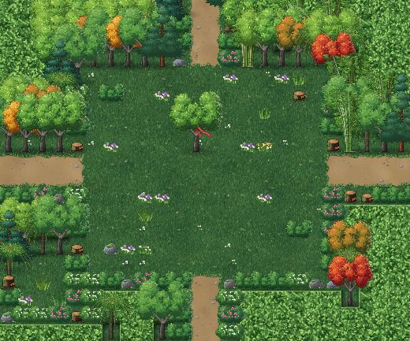
魔神仔的迷陣
靈視中的正確路線：東 → 南 → 南 → 西
- 有靈視時，地上會浮現銀色的小孩腳印，指向下一個正確出口。腳印會隨你走到第幾步而改變。
- 從東邊出去，會從西邊回到空地；從南邊出去，會從北邊回到空地。每走對一步會響一聲鈴，靈視中樟樹上的「紅舌頭」也會縮短一節。
- 走錯一步就要從頭開始，星河會說「腳印不是往這邊」。北邊出口隨時都能退回霧林・北，同樣會重置進度。
- 不開靈視也能過：記住「東、南、南、西」直接走就行。
- 解開後南邊出口直通霧林・南，其他方向只會繞回空地，迷陣不會再困住你。
阿蘭的三道題（虎姑婆的竹林）
| 題目 | 正確答案 |
|---|---|
| 伸手出來 | 星河、紅纓、白芷，誰伸手都可以，台詞不同 |
| 姊姊最後怎麼打敗虎姑婆？ | 用熱油（白芷的「用芋圓」也算過關） |
| 你們要帶我去哪裡？ | 回家 |
答錯會被毬果打頭，扣 1 點 HP，不會打死人。
洞窟的兩個竹籠
- 西側小房間：打開竹籠，救出小春。
- 東側小房間：通往這裡的通道被一面「會呼吸的岩壁」擋住。開靈視後岩壁就會消失。打開竹籠救出石頭，房間裡還有寶箱（牛皮甲）。
- 兩個籠子都打開後，北邊頭目間前的竹柵門才會開。
- 靈視中途結束、而你正好站在幻象裡時，會被自動擠回路上，不會卡住。
紮天燈（吳阿公）
| 問題 | 正確答案 |
|---|---|
| 先做什麼？ | 竹篾紮成圓口 |
| 然後？ | 糊上棉紙，做成燈身 |
| 燈底下放什麼當燃料？ | 沾了油的金紙 |
答錯會被吐槽，但可以一直重答。
銅鑼
在霧林、虎姑婆的竹林和洞窟等山林地圖中，從物品選單使用，魔神仔類的地圖敵人會摀著耳朵逃開 30 秒。不想戰鬥時很好用。在平溪敲的話，只會被路人看。
頭目戰#
| 頭目 | Lv | HP | 屬性 | 弱點 ×1.5 | 抗性 ×0.5 | 招式 | 階段 | 同場敵人 | 經驗 / 錢 | 類型 |
|---|---|---|---|---|---|---|---|---|---|---|
| 魔神仔頭 | 6 | 560 | 木 | 金 | — | 牽路、請吃大餐（土）、利爪、分身 | — | 魔神仔（幻影）×2 | 200 / 250 | 劇情（輸了也能繼續） |
| 洛紅纓 | 4 | 1,232 | 金 | 火 | — | 紅纓點（金）、橫掃、斬擊、「就這點本事？」 | —；剩 35% 時劇情結束 | — | 76 / 1 | 劇情（輸了也能繼續） |
| 虎姑婆 | 9 | 3,407 | 金 | 火 | — | 虎爪（金）、猛虎撲（金）、阿婆唱歌給你聽、嚼花生、乖孫，來、伏身、虎嘯、山君之怒 | 60% 變身、20% 變身 | — | 313 / 599 | 頭目 |
數據表
| 章 | 頭目 | Lv | HP |
|---|---|---|---|
| 第二章 | 虎姑婆 | 9 | 3,407 |
本章前三場（魔神仔頭、紅纓決鬥、魔神仔包圍）就算輸了也不會 Game Over：全員至少剩 25% HP，劇情照常進行。
魔神仔頭（2-7）
| 項目 | 內容 |
|---|---|
| 等級／HP | Lv6／560。幻影 HP 1，打一下就散 |
| 屬性 | 木（金剋木。火對木沒有加成） |
| 免疫 | 睡眠、暈眩、幻境 |
| 掉落 | 七彩靈蕈（必掉）、霧林小蕈 |
| 推薦 | Lv6。星河：螢火、菁染長衫、菁布頭巾、布鞋、香火袋。白芷：九份竹笛＋同款防具 |
| 招式 | 效果 |
|---|---|
| 牽路 | 單體，40% 機率陷入幻境 2 回合 |
| 請吃大餐 | 單體土屬性物理，40% 機率中毒 3 回合 |
| 利爪 | 單體物理 |
| 分身 | 有幻影被打散時，召喚兩隻新幻影 |
打法：
- 開著靈視進場，就只有魔神仔頭一隻，不會有幻影。救阿山本來就需要靈視，記得在走進空地前吃一朵。
- 有幻影的版本不要去打幻影：打散一隻，它就會再分身兩隻。直接集中打本體。
- 星河用螢火斬或普攻，白芷補血和解厄（解除幻境、中毒）。
洛紅纓（2-8 決鬥）
| 項目 | 內容 |
|---|---|
| 等級／HP | Lv4／1232（HP 剩 35% 時結束，實際只要打掉約 800） |
| 屬性 | 金（火剋金，螢火斬有效） |
| 免疫 | 睡眠、暈眩、幻境 |
| 推薦 | Lv6，同上 |
| 招式 | 效果 |
|---|---|
| 紅纓點 | 單體金屬性物理，威力 1.3 |
| 橫掃 | 全體物理，威力 0.7 |
| 斬擊 | 單體物理 |
| 「就這點本事？」 | HP 一半以下才會用。攻擊 +30%，持續 2 回合 |
打法：螢火斬為主，白芷負責補血。星河防禦時紅纓會有專屬台詞。輸了會進入另一個版本的劇情（白芷張開雙手擋在星河前面），之後的發展相同。
魔神仔包圍（2-9）
魔神仔 ×4（各 Lv6／HP 168，木屬性）。紅纓剛加入，用橫掃千軍（全體）配星河的普攻很快就能清完。紅纓的金屬性招式剋木。
虎姑婆（2-15）
| 項目 | 內容 |
|---|---|
| 等級／HP | Lv9／3407 |
| 屬性 | 金（火剋金：螢火斬、山產炒（焦）都打得到弱點） |
| 免疫 | 睡眠、暈眩、幻境 |
| 掉落 | 虎爪項鍊（飾品，攻 +5、暴擊率提升，必定取得） |
| 推薦 | Lv8～9。星河：螢火、菁染長衫、菁布頭巾、布鞋、雄黃香囊。白芷：青嵐笛＋同款防具。紅纓：初始裝備＋菁布頭巾。山產便當 ×5、鼎邊趖 ×3、烏龍茶 ×3、還魂香 ×2 |
| 階段 | 招式 | 效果 |
|---|---|---|
| 第一階段：老婦人 | 虎爪 | 單體金屬性物理，威力 1.4 |
| 猛虎撲 | 全體金屬性物理，威力 0.9 | |
| 阿婆唱歌給你聽 | 全體，35% 機率睡眠 2 回合 | |
| 乖孫，來 | 單體，50% 機率暈眩 1 回合 | |
| 嚼花生 | HP 一半以下才會用。回復一大截 HP | |
| 第二階段：老虎精（HP 60% 以下） | 虎爪、猛虎撲 | 同上 |
| 虎嘯 | 我方全體攻擊 -30%（2 回合），20% 機率暈眩 | |
| 伏身 | 預告下一擊很危險 | |
| 嚼花生 | HP 一半以下才會用 | |
| 第三階段：山君之怒（HP 20% 以下） | 攻擊 +30%，持續 3 回合。改以猛虎撲、虎爪為主，還會再用一次「山君之怒」（攻擊再 +30%） |
阿蘭的熱油：虎姑婆 HP 掉到 45% 以下時，阿蘭會衝進來丟一整鍋熱油。效果是：
- 造成最大 HP 9% 的火屬性傷害；
- 虎姑婆防禦下降 3 回合、暈眩 1 回合。
打法：
- 第一階段：星河用螢火斬、紅纓用紅纓點，打出穩定傷害。白芷用清心曲補血。有人睡著或暈眩，就用香包解除，或不理它等它醒。
- 第二階段：虎嘯會降攻擊，這 2 回合讓紅纓改用蓄勢（自身攻擊大幅提升），把傷害補回來。看到「伏身」就讓 HP 最低的人防禦。HP 低於一半後她會嚼花生回血，要保持輸出壓力。
- 熱油登場後，虎姑婆防禦下降 3 回合，這時是最大的輸出機會。可以用：
- 星河＋紅纓 Lv8 的合擊「火樹銀花」（全體三連擊，火屬性，兩人各耗 12 MP）；
- 丟山產炒（焦）（120 點火屬性，打中弱點）；
- 各人的絕技。
- 第三階段攻擊力一路疊高，先把全員補到安全線，再一口氣收尾。猛虎撲是全體攻擊，白芷 Lv8 的「潮生曲」（全體回復）在這時最好用。
BALANCE 模擬的勝率是 100%（約 7 回合），但有約 15% 的機率會有人倒下，記得帶還魂香。
小技巧#
- 平溪的客棧：住一晚 30 文，完全回復。打虎姑婆前先住一晚。
- 靈視的時間：剛吃完靈蕈林的那段約 2 分鐘，野外吃一朵約 75 秒。進迷陣前若靈視快結束，可以先回靈蕈林再採幾朵。
- 溪蝦只能在七月十六白天抓，紅纓的廚房要在打虎姑婆前完成，否則材料湊不齊。第三章開頭也會把沒完成的「紅纓的廚房」、兩盞心燈支線從清單移除。
- 第二章開頭會清掉第一章沒完成的支線，阿土伯的懷錶等任務不會出現在這裡。
- 霧林各處綁在樹上的紅布可以調查。靈視中的迷陣樟樹會變成一條紅舌頭。
- 平溪的四個孩子在八月初五會出現在廟埕，各有一句可愛的台詞。小春說籠子裡有「藍色的小火」陪她，和白芷有關。
- 星河 Lv6 學會流螢亂舞（隨機四連擊），白芷 Lv5 學會解厄、Lv8 學會潮生曲，紅纓 Lv5 學會蓄勢、Lv8 學會連環槍。星河與紅纓都到 Lv8 時，會跳出合擊教學。
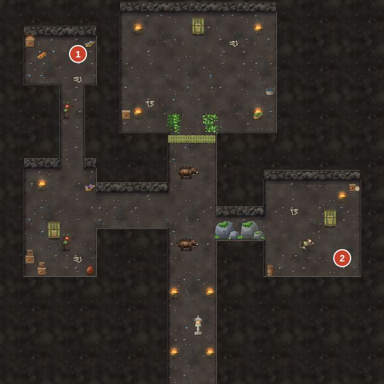
第三章 觀音艋舺#
提示 本章的流程攻略還在撰寫中（docs/guide/chapters/ch03.md）。下面先列出本章的頭目、寶箱與商店資料。
頭目#
| 頭目 | Lv | HP | 屬性 | 弱點 ×1.5 | 抗性 ×0.5 | 招式 | 階段 | 同場敵人 | 經驗 / 錢 | 類型 |
|---|---|---|---|---|---|---|---|---|---|---|
| 石猴王 | 12 | 1,875 | 土 | 木 | — | 丟石頭（土）、猴拳（土）、香火亂舞、扮鬼臉 | — | 石猴×2 | 802 / 500 | 頭目 |
| 鬼面 | 11 | 7,792 | 金 | 火 | 金 | 鬼面劍（金）、洛家劍・連環（金）、月牙劍氣（金）、鬼影步 | —；剩 50% 時劇情結束 | 陰兵×2 | 1,503 / 700 | 頭目 |
| 阿水伯 | 12 | 11,647 | 水 | 土 | — | 老拳、「是你們先放火！」 | — | 阿旺伯×1 | 0 / 0 | 劇情（結果固定） |
| 河伯怨靈 | 13 | 4,698 | 水 | 土 | 火 | 濁浪（水）、水草纏繞、吞噬（水）、呼喚水鬼 | — | 水鬼×2 | 342 / 799 | 頭目 |
寶箱#
| 地圖 | # | 座標 (x, y) | 內容 | 備註 |
|---|---|---|---|---|
| 淡水 | 1 | (12, 16) | 金創藥 ×2 | |
| 紅毛城・堡內 | 1 | (10, 3) | 舊鐵盔＋120 文 | |
| 觀音山道 | 1 | (4, 47) | 清心露 ×2 | |
| 觀音山道 | 2 | (34, 38) | 觀音山石劍 | |
| 觀音山道 | 3 | (4, 32) | 還魂丹 | |
| 觀音山道 | 4 | (30, 19) | 七彩靈蕈 | |
| 太虛觀 | 1 | (3, 3) | 雲紋道靴 | 靈視才看得見 |
| 太虛觀・雲歸的房間 | 1 | (10, 7) | 雷擊木符扇＋300 文 | 依劇情出現 |
| 艋舺 | 1 | (7, 33) | 解毒草 ×3 | |
| 戲棚後台 | 1 | (16, 4) | 胭脂 | 依劇情出現 |
| 剝皮寮 | 1 | (38, 4) | 杉木護腕 | |
| 舊渡頭 | 1 | (16, 11) | 水紋紗衣 | |
| 舊渡頭 | 2 | (30, 10) | 金創藥 ×3＋250 文 |
座標以地圖左上角為 (0, 0)，向右為 x、向下為 y；「#」對應地圖圖片上的寶箱編號。
商店#
阿珠姨魚丸
| 商品 | 類別 | 價格（文） | 效果／能力 |
|---|---|---|---|
| 魚丸湯 | 道具 | 5 | 我方單體：生命 +120（僅限野外） |
| 魚酥 | 道具 | 12 | 我方全體：生命 +60（僅限野外） |
林記雜貨
| 商品 | 類別 | 價格（文） | 效果／能力 |
|---|---|---|---|
| 金創藥 | 道具 | 30 | 我方單體：生命 +120 |
| 清心露 | 道具 | 40 | 我方單體：真氣 +30 |
| 解毒草 | 道具 | 12 | 我方單體：解除中毒 |
| 香包 | 道具 | 40 | 我方單體：解除沉睡・封印・定身・幻境 |
| 七彩靈蕈 | 道具 | 120 | 我方單體：幻境 4 回合，靈視約 75 秒 |
| 紅紙 | 其他 | 5 | — |
| 竹篾 | 其他 | 3 | — |
| 蠟燭 | 其他 | 2 | — |
| 魚酥 | 道具 | 12 | 我方全體：生命 +60（僅限野外） |
阿蓮碗粿（少鹽）
| 商品 | 類別 | 價格（文） | 效果／能力 |
|---|---|---|---|
| 阿蓮碗粿（少鹽） | 道具 | 8 | 我方單體：生命 +180 |
阿蓮碗粿
| 商品 | 類別 | 價格（文） | 效果／能力 |
|---|---|---|---|
| 碗粿 | 道具 | 6 | 我方單體：生命 +150（僅限野外） |
文旦攤
| 商品 | 類別 | 價格（文） | 效果／能力 |
|---|---|---|---|
| 文旦 | 道具 | 10 | 我方全體：真氣 +30（僅限野外） |
月餅攤
| 商品 | 類別 | 價格（文） | 效果／能力 |
|---|---|---|---|
| 月餅 | 道具 | 25 | 我方單體：生命 +200 |
米粉湯攤
| 商品 | 類別 | 價格（文） | 效果／能力 |
|---|---|---|---|
| 米粉湯 | 道具 | 90 | 我方全體：生命 +120 |
| 碗粿 | 道具 | 6 | 我方單體：生命 +150（僅限野外） |
青草巷
| 商品 | 類別 | 價格（文） | 效果／能力 |
|---|---|---|---|
| 青草茶 | 道具 | 25 | 我方單體：生命 +50，解除中毒・沉睡・封印・定身・幻境 |
| 金創藥 | 道具 | 30 | 我方單體：生命 +120 |
| 清心露 | 道具 | 40 | 我方單體：真氣 +30 |
| 凝神丹 | 道具 | 80 | 我方單體：真氣 +60 |
| 解毒草 | 道具 | 12 | 我方單體：解除中毒 |
| 還魂香 | 道具 | 150 | 倒下的同伴：復活（30% 生命） |
| 七彩靈蕈 | 道具 | 120 | 我方單體：幻境 4 回合，靈視約 75 秒 |
陳師傅兵器鋪
| 商品 | 類別 | 價格（文） | 效果／能力 |
|---|---|---|---|
| 艋舺精鋼劍 | 武器 | 330 | 武+25（星河） |
| 鑌鐵槍 | 武器 | 330 | 武+24（紅纓） |
| 紫竹簫 | 武器 | 330 | 武+5 法+24 氣+6（白芷） |
| 桃木符扇 | 武器 | 450 | 武+5 法+30（雲歸） |
| 艋舺短打 | 衣裝 | 380 | 防+14（星河・雲歸） |
| 繡花褙子 | 衣裝 | 400 | 防+13 法+3（白芷・紅纓） |
| 斗笠 | 頭飾 | 30 | 防+3 |
| 布頭巾 | 頭飾 | 90 | 防+5 |
| 布鞋 | 鞋履 | 40 | 防+2 速+2 |
| 木屐 | 鞋履 | 160 | 防+5 速+3 |
艋舺藥鋪
| 商品 | 類別 | 價格（文） | 效果／能力 |
|---|---|---|---|
| 青草茶 | 道具 | 25 | 我方單體：生命 +50，解除中毒・沉睡・封印・定身・幻境 |
| 金創藥 | 道具 | 30 | 我方單體：生命 +120 |
| 清心露 | 道具 | 40 | 我方單體：真氣 +30 |
| 凝神丹 | 道具 | 80 | 我方單體：真氣 +60 |
| 解毒草 | 道具 | 12 | 我方單體：解除中毒 |
| 香包 | 道具 | 40 | 我方單體：解除沉睡・封印・定身・幻境 |
| 還魂香 | 道具 | 150 | 倒下的同伴：復活（30% 生命） |
| 七彩靈蕈 | 道具 | 120 | 我方單體：幻境 4 回合，靈視約 75 秒 |
第四章 竹塹風起#
提示 本章的流程攻略還在撰寫中（docs/guide/chapters/ch04.md）。下面先列出本章的頭目、寶箱與商店資料。
頭目#
| 頭目 | Lv | HP | 屬性 | 弱點 ×1.5 | 抗性 ×0.5 | 招式 | 階段 | 同場敵人 | 經驗 / 錢 | 類型 |
|---|---|---|---|---|---|---|---|---|---|---|
| 柿鼠大王 | 15 | 5,776 | 水 | 土 | — | 肚皮彈（土）、鼠群、叫小弟、狂吃柿餅 | — | 柿鼠×2 | 552 / 308 | 頭目 |
| 風魔 | 18 | 7,321 | 木 | 金 | 木 | 裂風爪（金）、九降哀風、逆風陣、萬聲哭嚎（水）、萬聲呼喚、腐風（木）、吞魂、風穴漩渦 | 60% 召喚 變身、30% 變身 | — | 1,485 / 3,500 | 頭目 |
寶箱#
| 地圖 | # | 座標 (x, y) | 內容 | 備註 |
|---|---|---|---|---|
| 竹塹北郊 | 1 | (8, 4) | 金創藥 ×3 | |
| 竹塹北郊 | 2 | (42, 16) | 200 文 | |
| 竹塹北郊 | 3 | (6, 26) | 香包 ×2 | |
| 竹塹城 | 1 | (31, 12) | 續命散 | |
| 竹塹城 | 2 | (52, 18) | 解毒草 ×3 | 開啟時有事件 |
| 往柿樹坪山路 | 1 | (36, 18) | 柿餅 ×2 | |
| 往柿樹坪山路 | 2 | (6, 31) | 粄條 ×2 | |
| 往柿樹坪山路 | 3 | (17, 24) | 800 文 | |
| 往柿樹坪山路 | 4 | (20, 5) | 香包 ×2 | |
| 鼠窩 | 1 | (16, 4) | 銅鈴 | 依劇情出現、開啟時有事件 |
| 五指山山徑 | 1 | (23, 28) | 續命散 ×2＋300 文 | |
| 五指山山徑 | 2 | (4, 20) | 八卦鏡墜 | |
| 五指山山徑 | 3 | (30, 10) | 還魂香 ×2 | |
| 五指山山徑 | 4 | (35, 42) | 鞭炮 ×3＋500 文 | |
| 五指山風穴 | 1 | (23, 19) | 續命散 ×2 | |
| 五指山風穴 | 2 | (33, 6) | 螢石墜 | |
| 五指山風穴 | 3 | (10, 12) | 還魂香 ×2＋600 文 | |
| 五指山風穴 | 4 | (36, 3) | 七彩靈蕈 | 靈視才看得見、開啟時有事件 |
| 五指山風穴 | 1 | (9, 26) | 仙草 ×3 | |
| 五指山風穴 | 2 | (26, 4) | 鹿皮靴 | 開啟時有事件 |
| 五指山風穴 | 3 | (4, 8) | 續命散 ×2＋600 文 | 開啟時有事件 |
| 五指山風穴 | 4 | (39, 30) | 古錢串 | 靈視才看得見 |
| 五指山風穴深處 | 1 | (20, 27) | 還魂香 | 開啟時有事件 |
座標以地圖左上角為 (0, 0)，向右為 x、向下為 y；「#」對應地圖圖片上的寶箱編號。
商店#
米粉湯攤
| 商品 | 類別 | 價格（文） | 效果／能力 |
|---|---|---|---|
| 米粉湯 | 道具 | 90 | 我方全體：生命 +120 |
| 炒米粉 | 道具 | 160 | 我方全體：生命 +200 |
柿餅攤
| 商品 | 類別 | 價格（文） | 效果／能力 |
|---|---|---|---|
| 柿餅 | 道具 | 60 | 我方單體：真氣 +50 |
| 霜柿餅 | 道具 | 110 | 我方單體：真氣 +100 |
打鐵舖
| 商品 | 類別 | 價格（文） | 效果／能力 |
|---|---|---|---|
| 九降風劍 | 武器 | 520 | 武+32 速+3（星河） |
| 竹節鋼槍 | 武器 | 520 | 武+31 速+2（紅纓） |
| 竹骨符扇 | 武器 | 520 | 武+5 法+34 氣+8（雲歸） |
| 斗笠 | 頭飾 | 30 | 防+3 |
| 布鞋 | 鞋履 | 40 | 防+2 速+2 |
| 木屐 | 鞋履 | 160 | 防+5 速+3 |
回春堂
| 商品 | 類別 | 價格（文） | 效果／能力 |
|---|---|---|---|
| 金創藥 | 道具 | 30 | 我方單體：生命 +120 |
| 續命散 | 道具 | 120 | 我方單體：生命 +400 |
| 解毒草 | 道具 | 12 | 我方單體：解除中毒 |
| 香包 | 道具 | 40 | 我方單體：解除沉睡・封印・定身・幻境 |
| 還魂香 | 道具 | 150 | 倒下的同伴：復活（30% 生命） |
| 平安符 | 道具 | 80 | 我方單體：解除中毒・沉睡・封印・定身，護盾 3 回合 |
| 七彩靈蕈 | 道具 | 120 | 我方單體：幻境 4 回合，靈視約 75 秒 |
| 八卦鏡墜 | 佩飾 | 600 | 防+4；免疫封印 |
| 螢石墜 | 佩飾 | 800 | 運+4；劍意累積 ×1.5 |
徐記雜貨
| 商品 | 類別 | 價格（文） | 效果／能力 |
|---|---|---|---|
| 金創藥 | 道具 | 30 | 我方單體：生命 +120 |
| 續命散 | 道具 | 120 | 我方單體：生命 +400 |
| 解毒草 | 道具 | 12 | 我方單體：解除中毒 |
| 香包 | 道具 | 40 | 我方單體：解除沉睡・封印・定身・幻境 |
| 米酒 | 道具 | 50 | 我方單體：真氣 +40 |
| 鞭炮 | 道具 | 25 | 敵全體：火屬性傷害 40 |
| 還魂香 | 道具 | 150 | 倒下的同伴：復活（30% 生命） |
粄條店
| 商品 | 類別 | 價格（文） | 效果／能力 |
|---|---|---|---|
| 粄條 | 道具 | 80 | 我方單體：生命 +300 |
| 菜包 | 道具 | 70 | 我方單體：生命 +180，真氣 +20 |
| 仙草 | 道具 | 70 | 我方單體：生命 +150，解除中毒・沉睡・封印・定身・幻境 |
| 柿餅 | 道具 | 60 | 我方單體：真氣 +50 |
藍衫裁縫
| 商品 | 類別 | 價格（文） | 效果／能力 |
|---|---|---|---|
| 藍衫 | 衣裝 | 400 | 防+17 命+20 |
| 花布頭巾 | 頭飾 | 260 | 防+9 |
| 布鞋 | 鞋履 | 40 | 防+2 速+2 |
劉家擂茶
| 商品 | 類別 | 價格（文） | 效果／能力 |
|---|---|---|---|
| 擂茶 | 道具 | 100 | 我方單體：真氣 +80，解除中毒 |
第五章 鹿港舊夢#
提示 本章的流程攻略還在撰寫中（docs/guide/chapters/ch05.md）。下面先列出本章的頭目、寶箱與商店資料。
頭目#
| 頭目 | Lv | HP | 屬性 | 弱點 ×1.5 | 抗性 ×0.5 | 招式 | 階段 | 同場敵人 | 經驗 / 錢 | 類型 |
|---|---|---|---|---|---|---|---|---|---|---|
| 怨宴 | 20 | 5,271 | 土 | 木 | 水 | 狼吞（土）、杯盤狼藉、勸酒、入座、上菜・全豬、上菜・紅龜、宴終（土） | 50% 變身 | 祭盤・全豬×1、祭盤・紅龜×1 | 3,503 / 3,002 | 頭目 |
寶箱#
| 地圖 | # | 座標 (x, y) | 內容 | 備註 |
|---|---|---|---|---|
| 鹿港 | 1 | (6, 14) | 續命散 ×2＋800 文 | |
| 九曲巷 | 1 | (37, 11) | 鹿港風衣 | |
| 九曲巷 | 2 | (33, 2) | 還魂香＋500 文 | |
| 鹿港舊港 | 1 | (26, 2) | 鎮屍銅錢劍 | |
| 鹿港舊港 | 2 | (10, 15) | 擂茶 ×3 | |
| 洛家古厝 | 1 | (37, 14) | 洛家算盤＋600 文 | |
| 洛家古厝 | 2 | (3, 11) | 牛舌餅 ×3＋800 文 | 開啟時有事件 |
| 洛家古厝 | 3 | (14, 16) | 洛家虎頭槍＋600 文 | 開啟時有事件 |
| 洛家古厝 | 1 | (9, 15) | 紅纓的舊髮簪＋600 文 | |
| 洛家古厝 | 2 | (8, 3) | 父親的槍纓＋600 文 | 依劇情出現 |
| 洛家古厝 | 3 | (29, 17) | 少年劍 | 開啟時有事件 |
座標以地圖左上角為 (0, 0)，向右為 x、向下為 y；「#」對應地圖圖片上的寶箱編號。
商店#
燈籠攤
| 商品 | 類別 | 價格（文） | 效果／能力 |
|---|---|---|---|
| 小燈籠 | 佩飾 | 450 | 運+5 防+3 氣+10 |
蚵仔煎攤
| 商品 | 類別 | 價格（文） | 效果／能力 |
|---|---|---|---|
| 蚵仔煎 | 道具 | 110 | 我方單體：生命 +350 |
| 麵線糊 | 道具 | 50 | 我方單體：生命 +180 |
鹿港藥鋪
| 商品 | 類別 | 價格（文） | 效果／能力 |
|---|---|---|---|
| 金創藥 | 道具 | 30 | 我方單體：生命 +120 |
| 續命散 | 道具 | 120 | 我方單體：生命 +400 |
| 解毒草 | 道具 | 12 | 我方單體：解除中毒 |
| 香包 | 道具 | 40 | 我方單體：解除沉睡・封印・定身・幻境 |
| 還魂香 | 道具 | 150 | 倒下的同伴：復活（30% 生命） |
| 仙草 | 道具 | 70 | 我方單體：生命 +150，解除中毒・沉睡・封印・定身・幻境 |
| 薑母茶 | 道具 | 45 | 我方單體：生命 +80，解除沉睡・定身 |
| 鎮屍符 | 道具 | 120 | 敵單體：定身 2 回合（僅限戰鬥） |
| 定身符 | 道具 | 90 | 敵單體：定身 1 回合 |
牛舌餅攤
| 商品 | 類別 | 價格（文） | 效果／能力 |
|---|---|---|---|
| 牛舌餅 | 道具 | 90 | 我方單體：生命 +250，真氣 +20 |
| 麵線糊 | 道具 | 50 | 我方單體：生命 +180 |
| 蚵仔煎 | 道具 | 110 | 我方單體：生命 +350 |
施家鐵舖
| 商品 | 類別 | 價格（文） | 效果／能力 |
|---|---|---|---|
| 百煉鋼劍 | 武器 | 730 | 武+40（星河） |
| 精鋼長槍 | 武器 | 760 | 武+39 速+1（紅纓） |
| 鹿港雕花笛 | 武器 | 730 | 武+7 法+39 氣+12（白芷） |
| 硃砂符冊 | 武器 | 730 | 武+6 法+43 氣+12（雲歸） |
| 鹿港錦袍 | 衣裝 | 560 | 防+21 法+4 |
| 暖帽 | 頭飾 | 300 | 防+10；免疫沉睡 |
| 鹿皮靴 | 鞋履 | 330 | 防+8 速+4 |
第六章 府城長明#
概要#
元宵前夕，一行人南下鹽水看蜂炮，再進府城打聽雲歸師父清虛真人的下落。白天是做十六歲、燈謎和小吃攤；入夜之後，林投林的哭聲與長明宮的藍燈，會把這趟元宵之旅帶往完全不同的方向。
| 項目 | 內容 |
|---|---|
| 推薦等級 | Lv19 → Lv23（疫聚 Lv21、林投姐 Lv22、冥燈護法 Lv23） |
| 隊伍 | 沈星河、白芷、洛紅纓、雲歸（四人全員） |
| 主要地圖 | 海線官道、鹽水、府城（赤崁樓／大天后宮／孔廟／七娘媽廟）、林投林、長明宮（水門倉／迴廊／經閣）、萬燈閣 |
| 心燈 | 2 盞（轎夫與母親〔可錯過〕、林投姐〔主線〕） |
| 七仙蕈 | 潮音蕈（林投林，需靈視） |
本章是白芷在隊上的最後一章。第七到第十一章的隊伍只有星河、紅纓、雲歸三人，白芷的專用裝備（白玉簫、錦褙子等）在她離隊後就派不上用場，買之前請想清楚。
流程#
1. 海線官道 → 鹽水（正月十四・黃昏）
- 開場劇情後，從官道南端（下方出口）走進鹽水。
- 鹽水是本章第一個城鎮。先別急著去武廟，這時候可以做的事很多：
- 主街上的賣斗笠的阿伯（斗笠攤）有今晚要用的防具，見〈商店〉。
- 西側（3,18）與東南角大疫塚旁（41,30）各有一個寶箱。後者的艾草香囊可以免疫中毒，蜂炮夜非常好用。
- 走進主街北側的鹽水武廟（門口在 21,6）。林伯會講蜂炮的由來，主線任務開始。
- 離開武廟後，馬上去找主街上的轎夫阿義，他只在蜂炮夜開始前出現。這是心燈支線「轎夫與母親」的起點，錯過就沒了，詳見〈心燈與支線〉。
- 準備好了，回武廟跟林伯對話，選「開始吧。（蜂炮夜）」。
2. 蜂炮夜（連戰）
神轎出巡，沿主街一路往南。途中會在三個巷口各打一場，最後在大疫塚前對上頭目：
| 順序 | 地點 | 敵人 | 戰後 |
|---|---|---|---|
| 1 | 小巷 A 口 | 瘟鬼 ×3 | 斗笠阿伯丟來濕毛巾，全員回復 30% |
| 2 | 小巷 B 口 | 瘟鬼 ×2＋長明燈傀 | 回復 30% |
| 3 | 小巷 C 口 | 瘟鬼 ×4 | 回復 35% |
| 4 | 大疫塚 | 疫聚＋瘟鬼 ×2 | 頭目戰，見〈頭目戰〉 |
這四場都無法逃跑，中間也沒有機會開選單買東西，所以裝備和道具要在按下「開始吧」之前備齊。每回合開始時，炮城有機率對敵方齊射（見〈謎題與小遊戲〉），對你很有利。
劇透警告：蜂炮夜的結局
打倒疫聚後，茫然的瘟鬼們並沒有消失。關帝的神轎在大疫塚前自己轉了向，朝它們輕輕點了三下。所有炮城同時齊發，瘟鬼化成微光，跟著火花升上夜空。林伯說：「帝君出巡，不只是趕瘟。也是來接那些走得太急、來不及說再見的人。」
- 蜂炮夜結束後，如果有接阿義的支線，這時去大疫塚找那位咳嗽的婦人（見支線）。
- 走進鹽水客棧（25,16），老闆娘這晚免費招待。選「休息到天亮（前往府城）」就會直接進府城，鹽水的事要在這之前全部辦完。
3. 府城（元宵・午後）
到達府城北門後，地圖很大，先記住幾個重點位置：
| 地點 | 門口座標 | 備註 |
|---|---|---|
| 長明宮正門前埕 | 西側（6,4 附近） | 走進前埕觸發墨鴉劇情 |
| 赤崁樓 | (37,5) | 燈謎、寶箱 |
| 大天后宮 | (46,12) | 月老 |
| 鄭家 | (18,13) | 做十六歲之後可免費休息 |
| 七娘媽廟 | (26,13) | 做十六歲 |
| 武館兵器鋪 | (35,23) | 本章武器防具 |
| 府城客棧 | (53,16) | 一晚 60 文 |
| 府城藥鋪 | (57,16) | 藥品 |
| 孔廟 | (50,26) | 隱藏道具 |
| 林投林入口 | 西南角（0,40） | 肉粽伯劇情後才能進 |
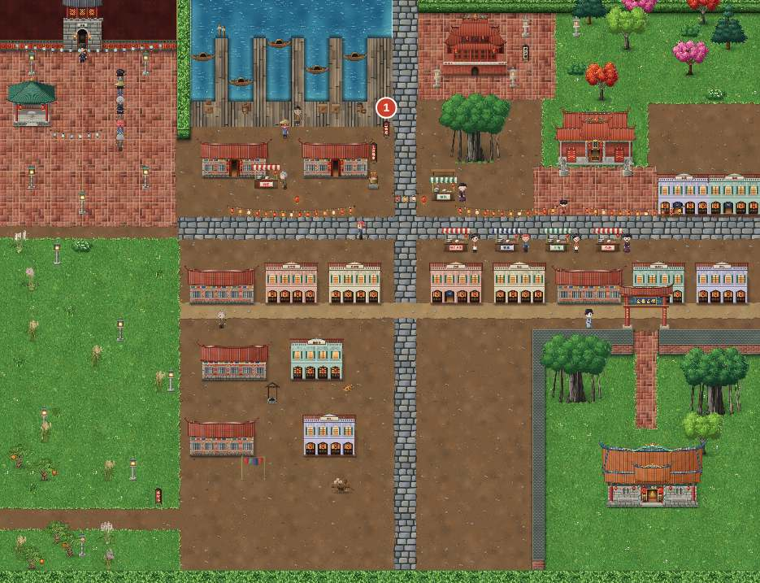
- 長明宮前埕（3-5）：往西走進排隊的人群就會觸發。墨鴉（升官成「墨護法」了）出現，芋圓一口扯下他的羽毛，一行人趁亂溜走。這裡沒有戰鬥。
- 七娘媽廟（3-6 做十六歲）：進廟就觸發。看鄭家阿進做十六歲，接著白芷也想「轉大人」，擲筊得聖筊（劇情固定，按 Z 擲就好）。獲得七娘媽的胭脂（法力＋10、運氣＋10、戰鬥開始時持續回復）與麻油雞 ×3。
- 肉粽伯（3-7）：做完十六歲後，走到五條港碼頭的肉粽攤（22,14 附近）就會觸發。肉粽伯告訴你林投林與水門的事，並交給白芷鄭家肉粽 ×2（關鍵道具），另外送府城肉粽 ×5。之後天色轉為黃昏。
- 黃昏時可以自由逛府城：赤崁樓燈謎、大天后宮月老、孔廟、小吃攤，都建議這時做完（見〈心燈與支線〉）。進了林投林以後，就一路打到章末，回不了府城。
- 準備完畢，從府城西南角走進林投林。
4. 林投林（哭聲迷宮）→ 林投姐
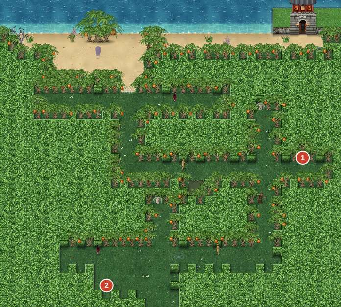
- 林投林由三個岔路組成，每個岔路有三條分支。哭聲最清楚的那條才是正路（地面上漣漪最大、最密的方向）。走錯會碰到一座擺著乾肉粽的無名墳，然後被送回該岔路的入口。完整解法見〈謎題與小遊戲〉。
- 走到最北邊的老林投樹下（14,9），觸發林投姐。這不是一般的頭目戰，請先讀〈頭目戰〉再打：打法對了，才拿得到額外獎勵「昭娘的銀簪」。
- 戰後劇情，白芷把鄭家肉粽交給林投姐母子，點亮心燈「林投姐」，獲得林投姐的木梳。天色入夜，林投姐撥開葉子，開出一條通往東北方水門的小路。
- 走到東北角的石砌水門（33~37,4 一帶），進入長明宮。
5. 長明宮潛行（S1 水門倉 → S2 迴廊 → S3 經閣）
潛行規則與三區的走法見〈謎題與小遊戲〉。重點：
- 長明宮內不能存檔。進水門前，林投林裡可以先存一次。
- 每一區都有一個「整區沒被發現才會出現」的寶箱，裡面是本章最好的幾件裝備。
- 被一般守衛抓到會開打，打贏後回到該區入口的石燈（檢查點）重來，紀錄也會歸零。
- S1 水門倉：從西南角入口出發，目標是北牆正中的門（15,1）。
- S2 迴廊：從西南角出發，繞著迴廊走到東北角的門（36,1）。南側走廊有墨鴉在巡邏。
- S3 經閣：解開書架機關，取得清虛真人的信，北邊（12,2）出現往下的暗門。
6. 萬燈閣 → 冥燈護法 → 夜玄
- 從暗門下到萬燈閣。入口旁（16,25）有寶箱：回魂香＋1,000 文，劇情開始前記得拿。
- 長篇劇情後，連續兩場戰鬥：冥燈護法（真正的頭目戰）→ 夜玄（強制敗北）。兩場之間沒有回復也不能開選單，冥燈護法要打得有餘裕。
- 之後是不能操作的章末劇情（北郊沙丘、甘蔗田），自動進入第七章。
劇透警告：第六章的結局
夜玄現身，自稱長明宮之主。他說萬燈閣的一萬三千七百盞燈，都是家人跪著求來的「不要忘記他」；彼岸燈會洗去一個人的一切，他稱之為「第二次死亡」。他的計畫叫「逆潮」：讓黑水溝倒流，把所有人帶著記憶送回岸上。為此，他需要燈靈——白芷。
強制敗北之後，夜玄發現星河身上沒有魂燈，胸口那縷金色的火其實屬於白芷，開始把火抽出來。白芷擋在星河身前說「我跟你走」，把刻著自己名字的玉牌交給星河保管：「那你要來追我喔。」紅纓的哥哥洛青鋒也站在夜玄身邊。雲歸用師父留下的遁符帶著眾人逃到府城北郊。星河的火只回來一半，而且離白芷越遠，燒得越弱。
心燈與支線#
心燈「轎夫與母親」（可錯過）
| 步驟 | 時機與地點 | 內容 |
|---|---|---|
| 1 | 武廟劇情之後、蜂炮夜之前，鹽水主街（23,8） | 和阿義對話，聽他講八年前的瘟疫和母親。任務開始。 |
| 2 | 蜂炮夜之後，大疫塚（38,29） | 墳間多了一個「咳嗽的婦人」。和她對話，她是阿義的母親。 |
| 3 | 鹽水主街 | 走回主街中段（20~22, 18~27 一帶）就會觸發：神轎回駕，母親看著扛轎的兒子，說出「這次有說再見喔」。 |
- 獎勵：心燈「轎夫與母親」、武廟平安符（防禦＋10、氣血＋40、免疫中毒）。
- 錯過條件：蜂炮夜一開始，阿義就不在主街了；而在客棧選「休息到天亮」後會直接前往府城。所以第 1 步一定要在按下「開始吧」之前，第 2、3 步要在睡覺之前。客棧老闆娘那邊，雲歸也會提醒你「大疫塚那邊，好像還有放不下的人」。
心燈「林投姐」（主線）
打完林投姐的劇情必定點亮。若戰鬥中「傾聽」（防禦）累積 3 次以上，會額外獲得昭娘的銀簪（頭飾，白芷／紅纓專用，防禦＋12、法力＋8、身法＋5）。
支線與小事件
| 事件 | 地點與條件 | 獎勵 |
|---|---|---|
| 赤崁樓燈謎 | 赤崁樓的文伯（19,11）。五題、每題只能答一次 | 答對 3 題以上：燈謎紙扇（雲歸武器，法力＋56）；全對再加文昌筆（法力＋18、真氣＋40） |
| 大天后宮・月老 | 進大天后宮後往右側殿走（17,7） | 月老紅線（星河專用，運氣＋20、身法＋3） |
| 孔廟泮池 | 孔廟南側泮池橋墩（12,16）調查 | 秀才的硯台（素材，可賣 400 文） |
| 鄭家休息 | 做十六歲之後，鄭家的鄭嫂 | 免費全員回復，可無限次使用 |
| 陳秀才 | 孔廟裡的陳秀才 | 聽雲歸說他「考過，沒中」的小對話 |
| 元宵攤 | 白芷第一次會問「吃了也會加一歲嗎？」 | 小對話 |
雲歸的蕈譜：潮音蕈
林投林裡，正路 B 往西的長走廊南側（22,21）長著潮音蕈。它是靈視才看得見的蕈：從選單使用七彩靈蕈開啟靈視（約 75 秒），走到那格就會觸發雲歸「為了研究」的試吃小劇場，蕈譜記下一格。本章商店不賣七彩靈蕈，請從前面的章節帶過來。
寶箱與秘密#
| 地圖 | # | 座標 (x, y) | 內容 | 備註 |
|---|---|---|---|---|
| 鹽水 | 1 | (3, 18) | 大金創藥 ×3＋600 文 | |
| 鹽水 | 2 | (41, 30) | 艾草香囊＋600 文 | |
| 府城 | 1 | (30, 8) | 凝神丹 ×3＋800 文 | 開啟時有事件 |
| 赤崁樓 | 1 | (5, 19) | 赤崁紅磚護符 | |
| 林投林 | 1 | (35, 18) | 還魂丹 ×2 | |
| 林投林 | 2 | (12, 33) | 海潮劍 | |
| 長明宮・水門倉 | 1 | (26, 2) | 長明宮衛甲 | 依劇情出現 |
| 長明宮・迴廊 | 1 | (2, 20) | 大金創藥 ×2＋800 文 | 開啟時有事件 |
| 長明宮・迴廊 | 2 | (37, 2) | 冥燈護符＋800 文 | 依劇情出現 |
| 長明宮・經閣 | 1 | (2, 16) | 清虛的舊葫蘆 | 依劇情出現 |
| 萬燈閣 | 1 | (16, 25) | 回魂香＋1,000 文 |
座標以地圖左上角為 (0, 0)，向右為 x、向下為 y；「#」對應地圖圖片上的寶箱編號。
| 地圖 | 位置 | 內容 | 備註 |
|---|---|---|---|
| 鹽水 | 西側 (3,18) | 大金創藥 ×3＋600 文 | |
| 鹽水 | 大疫塚東南 (41,30) | 艾草香囊＋600 文 | 免疫中毒，打疫聚前拿 |
| 府城 | 五條港北側 (30,8) | 凝神丹 ×3＋800 文 | |
| 赤崁樓 | 西南角 (5,19) | 赤崁紅磚護符 | 防禦＋15、火屬性減傷 |
| 林投林 | 岔路 B 東側死路旁 (35,18) | 還魂丹 ×2 | 走錯路的小安慰 |
| 林投林 | 入口西側三座無名墳旁 (12,33) | 海潮劍 | 星河專用，水屬性，攻擊＋52 |
| 長明宮 S1 | 東北角 (26,2) | 長明宮衛甲（防禦＋30） | 需 S1 全程未被發現 |
| 長明宮 S2 | 西側走廊 (2,20) | 大金創藥 ×2＋還魂丹＋800 文 | 一般寶箱 |
| 長明宮 S2 | 東北出口旁 (37,2) | 冥燈護符＋800 文 | 需 S2 全程未被發現；免疫封印 |
| 長明宮 S3 | 西南角 (2,16) | 清虛的舊葫蘆 | 雲歸專用，每回合回真氣；需 S3 未被發現 |
| 萬燈閣 | 入口旁 (16,25) | 回魂香＋1,000 文 | 劇情前拿 |
隱藏道具與小秘密
- 秀才的硯台：孔廟泮池橋墩下，調查即可。上面刻著「陳記・三十七次落第紀念」。
- 赤崁樓的贔屭：調查石碑（9,15），白芷會摸摸牠的頭。沒有道具，但很可愛。
- 蜂炮夜被炸到：齊射偶爾會打中我方一人，傷害不大，但那名角色運氣＋20（「今年會很旺！」）。
- 墨鴉的黑鴉羽：在 S2 被墨鴉抓到並打贏他，會掉落黑鴉羽（身法＋12）。代價是 S2 會被算作「已被發現」，見〈謎題與小遊戲〉。
- 冥燈殘芯：冥燈護法必定掉落，免疫封印與沉睡，第七章以後很實用。
商店#
肉粽攤
| 商品 | 類別 | 價格（文） | 效果／能力 |
|---|---|---|---|
| 府城肉粽 | 道具 | 140 | 我方單體：生命 +450 |
元宵攤
| 商品 | 類別 | 價格（文） | 效果／能力 |
|---|---|---|---|
| 元宵 | 道具 | 160 | 我方全體：生命 +20% |
斗笠攤
| 商品 | 類別 | 價格（文） | 效果／能力 |
|---|---|---|---|
| 鹽水斗笠 | 頭飾 | 380 | 防+11 速+1 |
| 厚棉襖 | 衣裝 | 800 | 防+24；抗火 |
| 濕毛巾 | 道具 | 25 | 我方單體：生命 +150，解除中毒 |
| 蜂炮 | 道具 | 220 | 敵全體：火屬性傷害 350 |
| 鞭炮 | 道具 | 25 | 敵全體：火屬性傷害 40 |
| 仙草 | 道具 | 70 | 我方單體：生命 +150，解除中毒・沉睡・封印・定身・幻境 |
虱目魚粥攤
| 商品 | 類別 | 價格（文） | 效果／能力 |
|---|---|---|---|
| 虱目魚粥 | 道具 | 260 | 我方全體：生命 +300 |
| 府城肉粽 | 道具 | 140 | 我方單體：生命 +450 |
| 青草茶 | 道具 | 30 | 我方單體：生命 +100，解除中毒 |
碗粿攤
| 商品 | 類別 | 價格（文） | 效果／能力 |
|---|---|---|---|
| 碗粿 | 道具 | 150 | 我方單體：生命 +500 |
| 鹹粿 | 道具 | 80 | 我方單體：生命 +280 |
| 鳳梨酥 | 道具 | 200 | 我方單體：生命 +400，真氣 +40 |
武館兵器鋪
| 商品 | 類別 | 價格（文） | 效果／能力 |
|---|---|---|---|
| 七星劍 | 武器 | 970 | 武+48 法+6（星河） |
| 麒麟槍 | 武器 | 970 | 武+48（紅纓） |
| 白玉簫 | 武器 | 970 | 武+8 法+47 氣+15（白芷） |
| 七星符扇 | 武器 | 970 | 武+7 法+52 氣+15（雲歸） |
| 鎖子甲 | 衣裝 | 730 | 防+26 |
| 錦袍 | 衣裝 | 820 | 防+27 法+3（星河・雲歸） |
| 錦褙子 | 衣裝 | 860 | 防+25 法+8（白芷・紅纓） |
| 玉冠 | 頭飾 | 480 | 防+13 法+4 |
| 官靴 | 鞋履 | 440 | 防+9 速+5 |
| 夜明珠 | 佩飾 | 1,100 | 法+12 氣+20 |
府城藥鋪
| 商品 | 類別 | 價格（文） | 效果／能力 |
|---|---|---|---|
| 金創藥 | 道具 | 30 | 我方單體：生命 +120 |
| 大金創藥 | 道具 | 90 | 我方單體：生命 +300 |
| 特級金創藥 | 道具 | 280 | 我方單體：生命 +900 |
| 凝神丹 | 道具 | 90 | 我方單體：真氣 +60 |
| 大凝神丹 | 道具 | 240 | 我方單體：真氣 +150 |
| 還魂香 | 道具 | 150 | 倒下的同伴：復活（30% 生命） |
| 解毒草 | 道具 | 12 | 我方單體：解除中毒 |
| 香包 | 道具 | 40 | 我方單體：解除沉睡・封印・定身・幻境 |
| 青草茶 | 道具 | 30 | 我方單體：生命 +100，解除中毒 |
| 回魂香 | 道具 | 1,200 | 我方全體：復活（30% 生命） |
| 商店 | 地點 | 商品 |
|---|---|---|
| 斗笠攤 | 鹽水主街，賣斗笠的阿伯 | 鹽水斗笠 380、厚棉襖 800、濕毛巾 25、蜂炮 220、鞭炮 25、仙草 70 |
| 鹽水客棧 | 鹽水 | 住宿 50 文（蜂炮夜後免費） |
| 武館兵器鋪 | 府城 (35,23) | 七星劍／麒麟槍／白玉簫／七星符扇 各 970、鎖子甲 730、錦袍 820、錦褙子 860、玉冠 480、官靴 440、夜明珠 1,100 |
| 府城藥鋪 | 府城 (57,16) | 金創藥 30、大金創藥 90、特級金創藥 280、凝神丹 90、大凝神丹 240、還魂香 150、解毒草 12、香包 40、青草茶 30、回魂香 420 |
| 虱目魚粥攤／碗粿攤 | 府城小吃街 | 虱目魚粥 260、府城肉粽 140、青草茶 30／碗粿 150、鹹粿 80、鳳梨酥 200 |
| 肉粽攤・元宵攤 | 府城 | 府城肉粽 140／元宵 160 |
| 府城客棧 | 府城 (53,16) | 住宿 60 文 |
採購建議（依 BALANCE 的配裝假設：頭目前能到的商店，每個欄位買最好的那件）
- 鹽水（打疫聚前）：只有斗笠攤能買。四人各一件厚棉襖（防禦 24，火屬性減傷，正好擋疫聚的「高燒」），錢夠再補鹽水斗笠。帶 3~4 個蜂炮（全體火屬性 350 傷害，正中疫聚和瘟鬼的弱點）和幾條濕毛巾（解毒）。
- 府城（打林投姐、冥燈護法前）：武館兵器鋪換上七星劍、麒麟槍、七星符扇；防具選錦袍（星河、雲歸）與錦褙子（紅纓）；頭飾玉冠、鞋子官靴。白芷的白玉簫與錦褙子只能用到本章結束，預算緊的話可以省下。
- 藥品：冥燈護法前請準備大金創藥、特級金創藥、大凝神丹、回魂香（復活並回六成）各數個，加幾個香包解封印。BALANCE 的標準是「兩種最好的單體回復 5＋3 個、真氣藥 3 個、復活藥 2 個」。
- 本章頭目給錢很大方（疫聚 2,500、冥燈護法約 5,000），一般玩家到府城時買齊整套不成問題。
謎題與小遊戲#
蜂炮齊射（鹽水蜂炮夜）
- 三場巷口戰：每回合開始時有 40% 機率，炮城對全體敵人齊射火屬性傷害（約「我方平均等級 ×12」，打中弱點 ×1.5）。
- 疫聚戰：機率提高到 60%、傷害係數 15；疫聚 HP 降到 30% 時必定觸發一次大齊射。
- 齊射有 10% 機率順便炸到我方一人：傷害等於「平均等級 ×4」，但那人運氣永久＋20（該場戰鬥中）。
擲筊
七娘媽廟（聖筊）與大天后宮月老（笑筊）的擲筊結果都是劇情固定的，按 Z 擲一次即可。
赤崁樓燈謎（全對解答）
和文伯對話選「來猜！」。五題、每題三選一，每題只有一次機會，而且整個燈謎攤只能玩一輪：
| 題目 | 答案 | 說明 |
|---|---|---|
| 「一口咬掉牛尾巴」 | 告 | 「牛」去掉尾巴，加一個「口」 |
| 「千里相逢」 | 重 | 「千」＋「里」 |
| 「人在草木間」 | 茶 | 艸＋人＋木 |
| 「十張口，一顆心」 | 思 | 「十」＋「口」成「田」，下面加「心」 |
| 「半部春秋」 | 秦 | 「春」的上半＋「秋」的「禾」 |
全對可拿到燈謎紙扇與文昌筆兩樣獎品。
林投林（哭聲迷宮）
三個岔路，依序 A → B → C。正路的判斷方法：
- 地上的藍色漣漪：正路有三圈、又大又亮；死路只有一圈淡淡的。
- 靠近正路岔口時會聽到哭聲。
- 走錯三次以後，白芷會直接說出方向。
| 岔路 | 正路 | 白芷的提示 |
|---|---|---|
| A（入口北邊） | 往右（東） | 「……我聽得到，往右邊。」 |
| B（A 走到底後往北） | 往左（西） | 「……我聽得到，往左邊。」 |
| C（B 的長走廊盡頭往北） | 往前，中間那條（北） | 「……往前走，中間那條。」 |
死路盡頭都有一座無名墳，墳前有一顆被咬過的乾肉粽。走錯只會被送回該岔路的入口，沒有其他懲罰。林投林裡有五組巡邏的怪物（林投刺精、水鬼、吊死鬼），碰到就會開打。
長明宮潛行（S1–S3）
基本規則（進水門時的教學內容）：
- 只有隊長在地圖上行動，同伴躲在暗處跟著。
- 守衛看得到前方的扇形範圍。你站在長明燈 2.5 格內的光裡，會被看到 5 格遠；在暗處只有 3 格。
- 被看見時守衛頭上的量表上升（亮處較快，2 格內加倍）：超過約三分之一會起疑，走過來東張西望；滿了就警戒，衝過來追你。
- 跑步（Shift）和深色的吱嘎木板會發出聲音。前門每 30 秒放一次煙火，煙火聲會蓋住所有聲音 3 秒。
- 發光的大甕可以躲進去（Z），但被警戒中的守衛在 2 格內盯著時躲不了。
- 按 F：芋圓會衝出去撞翻東西，把附近守衛引過去。
- 傀儡哨每 3 秒順時針轉 90 度，看見人就搖鈴，叫 8 格內的守衛過來。從它正後方靠近並調查，雲歸會貼上定身符（30 秒內不動）。
- 被抓到：與守衛戰鬥，打贏後回到入口石燈重來，守衛也回到原位。
- 「已被發現」的判定：守衛進入警戒、你被抓、或傀儡搖鈴，任一發生都算。被一般守衛抓到並傳回檢查點時，紀錄會歸零，可以重新挑戰無傷通關寶箱。
S1 水門倉（入口在西南角，出口在北牆中央 15,1）
- 守衛 g1 繞著西半邊的方形路線（6,4）→（6,14）→（12,14）→（12,4）巡邏；g2 在北側（18,7）↔（27,7）來回，停下時面朝下。
- 傀儡哨在（15,11），一開始面朝上。
- 北邊（13~16, 5）是一整排吱嘎木板，往出口時用走的、或抓煙火的時機過去。
- 走法：先躲進（4,10）的大甕，等 g1 往東走遠，沿西牆北上；繞到傀儡背後（15,12）貼符；再趁 g2 走到東端時從（14,3）的大甕附近溜向出口。無傷寶箱在東北角（26,2），要趁 g2 往西走時去拿。
S2 迴廊（入口在西南角，出口在東北角 36,1）
- 中庭點滿長明燈，一進去就會被看得很遠，請沿外圈迴廊走。
- 守衛：g3 在西側走廊（4,6）↔（4,21）；g4 在北側走廊（6,3）→（33,3）來回，會在中段停下面朝下；g5 在東側走廊（35,6）↔（35,23）。
- 墨鴉在南側走廊（9,25）↔（33,25）巡邏，視野固定 5 格。被他抓到會打一場墨鴉戰（見〈頭目戰〉），打贏他就逃走，不會傳回檢查點。
- 傀儡哨：（5,4）面朝下、（35,26）面朝左。
- 吱嘎木板：北走廊（15~18, 3~4）、東走廊（35~36, 15）。
- 屏風後面（2,11）（2,19）（26,5）（36,13）等處是死角。大甕在（10,26）（30,26）（36,8）。
- 路線建議：從入口往東沿南走廊走在墨鴉背後，用（10,26）（30,26）兩個大甕躲他回頭；在（35,26）那隻傀儡的背後（36,26）貼符；等 g5 往南走時沿東走廊北上，經（36,8）的大甕，到東北角出口。無傷寶箱「冥燈護符」就在出口旁（37,2）。西側走廊的普通寶箱（2,20）不受發現與否影響。
S3 經閣（書架機關）
- 一名守衛在桌邊（15,8）打瞌睡。中央（11~12, 8~10）是吱嘎木板，從兩側書架之間繞過去。
- 八座書架上的木牌，依位置是：西側由北到南「一、念、清、靜」，東側由北到南「萬、緣、皆、歸」——合起來就是太虛觀鐘上的「一念清靜，萬緣皆歸」。
- 桌上字條（13,8）：「先取師之字，後取徒之字。」
- 解答：先抽西側第三座「清」（清虛真人的清，位置 2,9），再抽東側最下面「歸」（雲歸的歸，位置 20,12）。
- 抽錯書架會讓書嘩啦掉一地，發出半徑 6 格的大聲響，順序也要重來。錯兩次以上雲歸會給提示。
- 解開後獲得清虛真人的信，北邊（12,2）出現往萬燈閣的暗門。無傷寶箱「清虛的舊葫蘆」在西南角（2,16），建議先拿寶箱再解書架。
頭目戰#
數據表
| 章 | 頭目 | Lv | HP |
|---|---|---|---|
| 第六章 | 疫聚 | 21 | 9,259 |
| 第六章 | 林投姐 | 22 | 7,036 |
| 第六章 | 墨鴉 | 23 | 4,279 |
| 第六章 | 冥燈護法 | 24 | 7,829 |
| 頭目 | Lv | HP | 屬性 | 弱點 ×1.5 | 抗性 ×0.5 | 招式 | 階段 | 同場敵人 | 經驗 / 錢 | 類型 |
|---|---|---|---|---|---|---|---|---|---|---|
| 疫聚 | 21 | 9,259 | 土 | 火・木 | — | 咳疫（土）、高燒（火）、拖入、聚眾 | 50% 回復10% | 瘟鬼×2 | 4,008 / 2,500 | 頭目 |
| 林投姐 | 22 | 7,036 | 水 | 土 | — | 林投刺（木）、纏髮、黑淚（水）、呼喚林投 | — | 林投刺精×2 | 4,994 / 0 | 頭目 |
| 墨鴉 | 23 | 4,279 | 水 | 土 | — | 鴉羽亂舞、黑翼遮天、啄眼、升官的氣勢 | 50% | 長明宮衛×1 | 684 / 600 | 頭目 |
| 冥燈護法 | 24 | 7,829 | 水 | 土 | 火 | 鎖魂鏈（金）、冷燈照（水）、長明縛 | 50% 變身、20% 變身 | 魂罐・北×1、魂罐・東×1、魂罐・南×1、魂罐・西×1 | 5,006 / 4,999 | 頭目 |
| 夜玄 | 44 | 999,999 | 水 | 土 | — | 請住手。 | — | — | 0 / 0 | 劇情（結果固定） |
疫聚（鹽水・大疫塚）
| 項目 | 內容 |
|---|---|
| 等級／HP | Lv21／9,259（附帶瘟鬼 ×2，各約 1,150） |
| 屬性 | 土 |
| 弱點 | 火（指定弱點）、木（五行相剋） |
| 推薦 | Lv21；四人各穿厚棉襖，紅纓、雲歸戴艾草香囊／平安符類免毒飾品 |
招式
- 咳疫：全體土屬性術法，40% 中毒 3 回合。
- 高燒：單體火屬性術法，威力 1.4，本戰最痛的一招。厚棉襖可以減輕。
- 拖入：單體 60% 沉睡 2 回合。
- 聚眾：HP 低於一半後才會用，叫出新的瘟鬼。
- 半血：HP 降到 50% 時，它會把整條街的哭聲吸回去，回復 10% HP。
- 蜂炮齊射：每回合 60% 機率打全體敵人，HP 30% 時必定大齊射一次。
打法
- 第 1 回合：白芷放月霧護身曲（全體防禦提升），雲歸放五雷正法（木屬性全體，打疫聚是剋制），星河放燎原或焚天劍氣，紅纓用怒焰紅纓（Lv22 學會）或蜂炮道具，先把兩隻瘟鬼清掉。
- 瘟鬼倒下後集中疫聚：雲歸雷符／五雷正法、星河星墜劍、紅纓回馬槍。
- 中毒用濕毛巾、青草茶或白芷的解厄處理；被拖入睡著的人用香包叫醒。
- 半血時它會回 10% 並開始叫小弟，叫出來的瘟鬼用全體技一起掃掉，蜂炮齊射也會幫你清。
- 劍意滿了就放大招，30% 的必定齊射之後通常一兩回合就收工。
戰後掉落蜂炮，經驗 4,008、金錢 2,500。
林投姐（林投林深處）
| 項目 | 內容 |
|---|---|
| 等級／HP | Lv22／7,036（HP 條在本戰是她的「怨」）；附帶林投刺精 ×2 |
| 屬性 | 水 |
| 弱點 | 土（林投刺精：木屬性，弱金） |
| 推薦 | Lv22，府城武館裝備 |
機制：她不是惡鬼
- 畫面上方的紫色量表是「怨」，降到 0 戰鬥就結束（她不會死）。
- 林投姐每行動三次，第三次是「泣訴」：她不攻擊，只說話。之前那一次會先出現「林投姐的肩膀在發抖……」作為預告。
- 泣訴之後，到她下一次行動之前是「傾聽時間」，畫面會寫「她在訴說——選擇『防禦』靜靜傾聽」：
- 這段時間裡，每個選「防禦」的人＝傾聽一次：怨 −8%，而且她的攻擊力下降。每人每次泣訴只算一次。
- 這段時間裡攻擊她（任何會造成傷害的行動）：不但沒傷害，怨反而 +5%（「被打斷了」）。
- 白芷的渡魂謠任何時候都能讓怨 −6%。
- 怨降到 30% 時觸發劇情（白芷吹笛、星河發現她背後有人），之後她的攻擊與法力都降為七成。
招式：林投刺（全體木屬性物理）、纏髮（單體 70% 封印）、黑淚（單體水屬性術法，降法力）、呼喚林投（召喚林投刺精，場上已有兩隻時改用林投刺）。
打法
- 平常回合：雲歸用土符（剋水）、星河紅纓普通輸出；紅纓用金屬性的紅纓點／連環槍清林投刺精。白芷每回合渡魂謠（怨 −6%）或補血。
- 看到「肩膀在發抖」就停手準備，泣訴一出現，四個人全部防禦：一輪就是 −32% 的怨，還能累積劍意。
- 傾聽 3 次以上會拿到昭娘的銀簪；一次泣訴全員防禦就達標了。
- 被纏髮封印的人照樣可以防禦傾聽。
- BALANCE 的模擬中這是「溫柔」的一戰，跟著提示傾聽幾乎不可能輸。
冥燈護法（萬燈閣）
| 項目 | 內容 |
|---|---|
| 等級／HP | Lv24／7,829；附帶魂罐 ×4（北、東、南、西，各 714 HP、防禦很高） |
| 屬性 | 水 |
| 弱點／抗性 | 弱土；抗火 |
| 推薦 | Lv23（BALANCE 模擬勝率 93%），府城整套裝備；帶冥燈護符、香包、回魂香 |
招式
- 鎖魂鏈：單體金屬性物理，威力 1.5，並降身法。
- 冷燈照：全體水屬性術法。
- 長明縛：單體 85% 封印 3 回合（冥燈護符可免疫）。
- 重鑄：有魂罐被打破時，30% 機率掰下自己的燈芯（自己 −10% HP）把罐子封回去，整場最多 2 次。
魂罐機制
- 每個還在的魂罐，讓護法防禦 +8%，而且護法每次行動前回復 1.5% HP（四罐就是 6%）。
- 打破一個魂罐，裡面的魂被放走，我方全體回復 10% HP。
- 白芷的渡魂謠會直接放走 HP 最低的那個魂罐。
第二階段（HP 50%）：燈籠頭裂開，開始使用「燈印」：隨機烙在一名隊員身上，畫面會在他的狀態欄上寫「燈印 2」。護法再行動兩次後燈印燃燒，是一記非常重的術法傷害。破解方法：
- 星河對被烙印的人放護燈訣 → 完全抵銷（狀態欄改成「燈印（已護住）」）。
- 或讓被烙印的人在燃燒時處於防禦狀態 → 傷害只剩兩成。
第三階段（HP 20%）：萬燈齊鳴，護法身法＋30%，而且每次行動都吸走全隊 5% 真氣。
打法
- 第 1 回合：白芷渡魂謠放走一罐；星河劍氣縱橫、紅纓橫掃千軍（無屬性全體，不吃抗火）砍其他罐子；雲歸迷魂扇降護法攻擊。星河的火屬性招式對護法只有一半效果，打罐子時用全體招即可。
- 罐子全破之前不要急著打本體：活著的罐子讓它又硬又會回血，而每破一個罐子你就回 10%。之後它「重鑄」一次罐子，就用渡魂謠再放走。
- 罐子清完後集中本體：紅纓破甲（降防）→ 回馬槍；雲歸土符（剋水 ×1.5）；星河星墜劍／普攻。
- 進入第二階段後，星河保留 MP 和行動給護燈訣。燈印一出現，下一個輪到星河就對那人放護燈訣；星河自己被烙印時也可以對自己放。
- 被長明縛封印的人用香包或白芷的解厄解除。
- 第三階段開始吸真氣，用大凝神丹補，並把劍意大招、合擊（星河渡燈、雲水禪心）一口氣放出去。
戰後必定掉落冥燈殘芯，經驗約 5,000、金錢約 5,000。打完不會回復，緊接著就是夜玄。
夜玄（強制敗北）
| 項目 | 內容 |
|---|---|
| 等級／HP | 畫面顯示「Lv ？？」「？？？」 |
| 結果 | 一定會輸，輸了劇情照常進行，不會 Game Over |
這一戰你的任何攻擊都只會打出「……」。他的四次行動是固定的：
- 請住手。：不出手，只是看著你們。
- 長明・縛：全員封印 3 回合（「你們的法術，在這裡點不亮。」）。
- 歸寂：紅纓與雲歸直接倒下（「睡吧。不會痛的。」）。
- 抽燈：星河剩 1 HP，戰鬥結束。
不能逃跑（「逃不掉。」）。小彩蛋：如果在這場放出劍意大招，夜玄會說「……陳渡的劍法。他教得很好。」
墨鴉（再戰，可選）
只有在 S2 迴廊被墨鴉抓到時才會發生。
| 項目 | 內容 |
|---|---|
| 等級／HP | Lv23／4,279，附帶長明宮衛 ×1 |
| 屬性 | 水；弱土 |
| 招式 | 鴉羽亂舞（全體 3 連擊）、黑翼遮天（全體降身法）、啄眼（單體 60% 沉睡）、升官的氣勢（HP 半血以下，自身攻擊＋30%） |
| 掉落 | 黑鴉羽（身法＋12） |
先用雲歸的土符和紅纓的全體技把長明宮衛清掉，再集中墨鴉。睡著的人用香包或解厄叫醒；半血後他會自我強化，白芷的月霧護身曲頂住鴉羽亂舞即可。打贏後墨鴉「戰略性撤退」，從此不在 S2 巡邏。
小技巧#
- 鹽水是一次性地圖：阿義的支線第 1 步要在蜂炮夜之前，第 2、3 步要在客棧睡覺之前。厚棉襖、蜂炮也要在按「開始吧」之前買好。
- 府城黃昏是最後的自由時間：燈謎、月老、硯台、武館與藥鋪的採購，都要在走進林投林前完成。章末之後不會再回到府城。
- 鄭家可以免費全員回復，做完十六歲後隨時回去找鄭嫂。
- 燈謎只能玩一輪，答案照抄上面的表格就能全對。
- 林投林是長明宮前最後一個能存檔的地方，萬燈閣裡兩場連戰沒有回復，進水門前請先存檔。
- 潛行時，S3 的無傷寶箱在入口附近，先拿再去抽書架，最保險。
- S2 被墨鴉抓到會失去「冥燈護符」（無傷寶箱）的資格。想兩樣都要，可以故意讓一般守衛抓到一次：傳回檢查點時紀錄會歸零。
- 白芷在本章結束時離隊，她身上的裝備會一直留在她身上，直到第十一章歸隊。進萬燈閣前可以把七娘媽的胭脂、冥燈護符之類通用飾品從她身上換下來，留給第七章的三人。
- 七娘媽的胭脂（戰鬥開始時持續回復）給第七章的紅纓或雲歸戴，非常好用。
心燈檢查表（第六章）
| 心燈 | 取得方式 | 可錯過 |
|---|---|---|
| 轎夫與母親 | 鹽水支線（阿義） | 是（蜂炮夜前接、睡覺前完成） |
| 林投姐 | 主線（林投林） | 否 |
真結局需要在通關前累積 14 盞心燈。第五章結束時最多 13 盞，本章最多再加 2 盞，到這裡最多 15 盞。
第七章 雲山入夢#
概要#
星河胸口借來的火一天比一天暗。三人帶著兩隻貓上山，從阿里山的鄒族大社、玉山的布農人家，一路走到雲霧林深處的藤婆小屋，在夢裡面對各自的傷，最後來到日月潭霧底下的燈母祠。
| 項目 | 內容 |
|---|---|
| 推薦等級 | Lv23 → Lv27（黑熊精 Lv24、心魔・雲歸 Lv25、無光之影與蛟 Lv26、清虛真人＋冥燈印 Lv27） |
| 隊伍 | 沈星河、洛紅纓、雲歸（白芷不在隊上，第七到第十一章都是三人隊） |
| 主要地圖 | 甘蔗田・土地公廟、阿里山古道、鄒族大社、神木林、玉山山徑、Biung 的家、雲霧林、藤婆小屋、靈境、日月潭、湖霧之徑、燈母祠 |
| 心燈 | 2 盞（霧中的獵刀、燈母祠的壁畫，兩盞都可錯過） |
| 七仙蕈 | 雲芝（雲霧林，不需靈視） |
本章少了白芷這個專職補師，回復主要靠雲歸的回春符、星河的九份燈火和道具。前半章星河還有「燈芯將盡」的限制，請先讀〈小技巧〉。
流程#
1. 甘蔗田・土地公廟 → 阿里山古道
- 開場劇情後可以自由行動。工寮裡的木箱可以拿到甘蔗 ×2，鍋子旁有一段吃粥的小對話；廟後（6,4）有寶箱。
- 和牛車旁的阿伯對話（再送甘蔗 ×3），選「搭牛車去山腳」，前往阿里山古道。
- 阿里山古道：山腳交易寮的老吳是本章第一間商店（見〈商店〉）。順便買一包粗鹽（10 文），之後的小支線要用。
- 沿古道往北。在中段的倒木一帶（18~31, 11~13）觸發黑熊精戰。Voyu 說「不要殺牠！牠病了」，這一戰只要把黑熊精打到剩三成 HP 就結束，雲歸會用淨化符替牠洗去潮病。
- 跟著 Voyu，從古道北端進入鄒族大社。
2. 鄒族大社（Tsou）
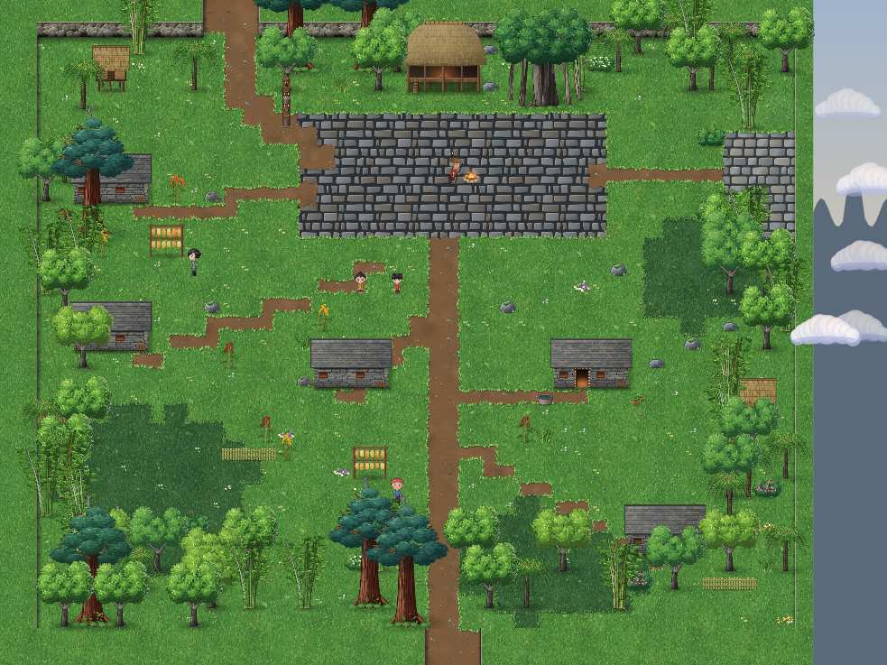
- 抵達後是部落的迎客劇情，長老講述塔山的故事。
- 北邊的 kuba（男子會所）只能在外面調查，不能進去，這是對部落規矩的尊重。東側崖邊可以「眺望」塔山，但同樣過不去。
- 把粗鹽交給小米架旁的婦人（10,14），換到愛玉凍 ×3（支線「老吳的鹽」）。
- 走進廣場東南的 Voyu 的家（31,20），和 Voyu 的母親對話，選「在火塘邊休息」。第一晚會聽到 Voyu 的弟弟 Pasuya 的事，星河的燈芯也會回復一些。
- 天亮後出門和 Voyu 對話，接下心燈支線「霧中的獵刀」（見〈心燈與支線〉）。
- 從大社北邊出口前往神木林。
3. 神木林 → 玉山山徑
- 走到神木前觸發劇情（7-4a）。
- 一定要先去東邊崖上看雲海（38~40, 10~13），否則北邊出口會被雲歸叫回來。
- 若接了 Pasuya 的支線，這時在西側推開倒木，下到霧谷調查三處「微光」（見支線）。
- 從神木林北邊出口進入玉山山徑。
- 玉山山徑中段（21,27）有「進入後將無法折返」的提示。選「繼續往上走」之前，請先完成 Pasuya 的支線，並拿完阿里山古道、神木林的寶箱。過了這裡就回不去了。
- 往上走會觸發坍方（7-5b），一行人被布農族的獵人 Biung 救回家。
4. Biung 的家（Bunun）→ 雲霧林
- 在 Biung 家的石板屋過夜。屋裡傳來 pasibutbut（八部合音），遊戲裡只會從屋內靜靜聽見，不會有小遊戲，也不能存檔，請好好聽完。
- 隔天早上聽完洪水的傳說，祖母送星河黑鵯紅羽（星河專用，抗水、火屬性傷害提升），另外拿到小米糕 ×3、醃山肉 ×2。燈芯也會回復。
- 選「跟著 Biung 去雲霧林」。之後也可以從 Biung 家西邊回到玉山山徑，拿北側（40,4）的赤霞劍寶箱，再從山徑西北（6,0）進雲霧林。
- 雲霧林：跟著藤婆的木牌走，路線見〈謎題與小遊戲〉。途中（8,20）有本章的七仙蕈雲芝。
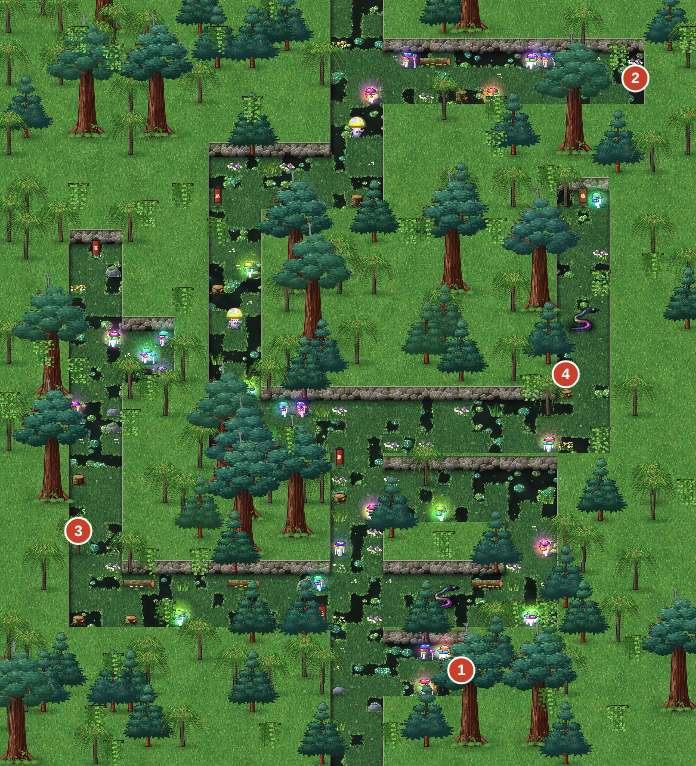
5. 藤婆小屋 → 入夢禮
- 見到藤婆，她要三人禁食三天。這段期間不能離開小屋一帶。
- 和藤婆對話選「我準備好了（入夢禮）」。入夢前每個人要說出走進夢裡的意圖，星河的三個選項：
- 「我想活下去。」
- 「我想救回白芷。」
- 「我想知道，我借來的光該怎麼還。」
三個選項只影響之後心火覺醒時星河說的台詞，不影響數值或結局，選你喜歡的就好。
入夢禮與夢藤是本作虛構的、只屬於藤婆一人的儀式，與任何真實的族群祭儀無關。
6. 靈境（呼吸之庭與三道試煉）
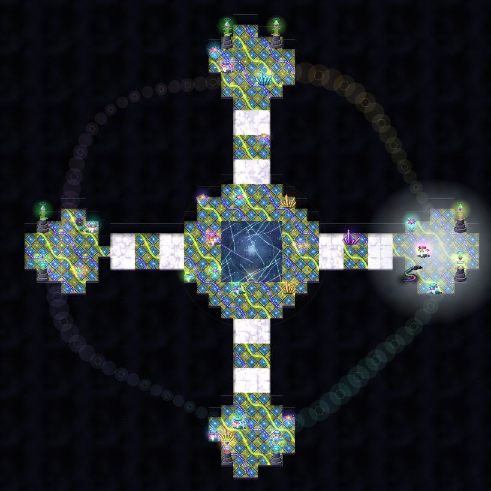
- 呼吸之庭是靈境的中樞，橋會跟著呼吸出現、消失（見〈謎題與小遊戲〉）。中央右下的水晶（23,23）可以存檔，也可以把呼吸調慢。
- 西門：紅纓之境（刀鏡謎題 → 心魔・鬼面，紅纓單挑）。完成後紅纓學會被動技「放手」（HP 低於三成時防禦提升）。
- 北門：雲歸之境（九燈謎題 → 心魔・雲歸）。完成後雲歸學會被動技「慢看」（戰鬥中敵人頭上會顯示弱點屬性）。
- 兩道試煉都完成後，東門打開：星河之境（五音水燈）。之後是本章的高潮：心火覺醒、無光之影頭目戰。
- 醒來後是 7-11 黎明，藤婆送星河藤心結（星河專用，最大 HP＋10%、戰鬥開始時持續回復），另有雲霧藥草包 ×3 與關鍵道具雲豹之紋。
劇透警告：三道試煉與心火
紅纓在洛家古厝面對「鬼面」，在第四回合喊出他的名字「哥哥。青鋒。」，鬼面碎成光蝶，底下是十六歲的哥哥。她也在一瞬間看見：黑色的海、一道黑雷、一個張開雙臂擋在她面前的背影。
雲歸在雲上的太虛觀面對「師父想要的那個弟子」，最後看見湖底盤坐著一個背上燃著藍黑色燈的人影：清虛真人。
星河回到十八年前中元夜的八斗子，看見一次又一次輪迴的自己。他明白借來的光是白芷的，但自己的火「是用這十八年的每一個人點起來的」。心火覺醒：燈芯將盡的限制解除，星河學會心火・燃燈／照夜／不滅。
7. 日月潭（Thao）→ 湖霧之徑 → 燈母祠
- 從藤婆小屋東邊跟著雲豹，到日月潭。和邵族長老見面，看見白鹿，聽杵音。
- 湖心的島是 Lalu，是邵族祖靈所在的地方。岸邊的獨木舟調查後星河會說「我們不划過去」，遊戲裡也無法抵達。
- 東邊碼頭的阿財（43,18）是湖畔雜貨船，賣本章最好的武器。蘆葦間的破木箱（44,22）裡有一包還魂香。
- 到長老家（西邊，4,24）選「休息」，觸發 7-12d：雲豹在霧上踏出一條路，進入湖霧之徑。
- 湖霧之徑：中段（11~19, 20~22）觸發蛟頭目戰。打完往北，燈母祠浮出水面。
- 燈母祠・上殿：看壁畫、解五行燈謎題（見〈謎題與小遊戲〉），池水退去出現往下的石階。
- 燈母祠・下殿：再看三幅壁畫，打開北邊的巨門，進入祠心。
- 祠心：清虛真人（被附身）＋冥燈印頭目戰。打完後是本章結尾劇情，自動進入第八章。
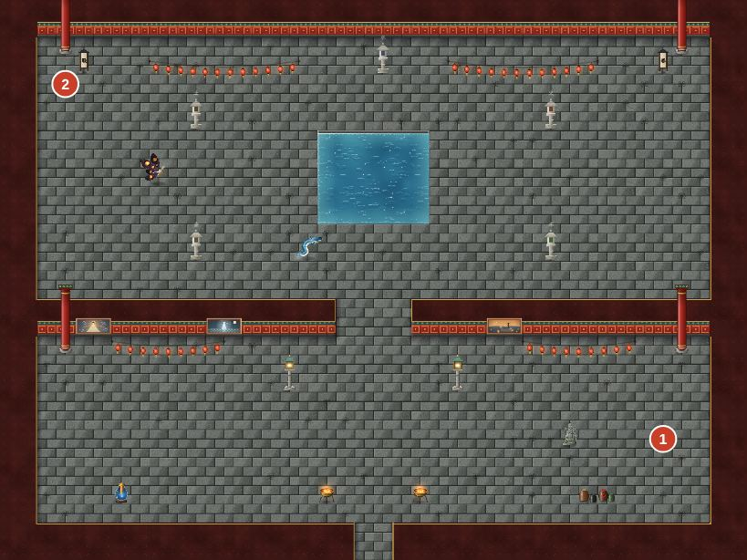
劇透警告：燈母祠的結局
清虛真人被長明宮的「冥燈印」操縱，在祠心等著。冥燈印碎裂後，清虛倒在雲歸懷裡：「……雲歸。你長高了。」雲歸學會太虛神雷，並得到師父的清虛古符（雲歸專用武器，法力＋74）。之後燈母的聲音在祠裡響起，章末一行人在日月潭邊吃了一碗魚粥。
心燈與支線#
心燈「霧中的獵刀」（可錯過）
| 步驟 | 時機與地點 | 內容 |
|---|---|---|
| 1 | 鄒族大社，第一晚在 Voyu 家過夜之後 | 天亮後和廣場上的 Voyu（33,22）對話，他拜託你們去霧谷看看。 |
| 2 | 神木林西側（6,23） | 調查橫倒的大木頭，紅纓把它推開，往西南的霧谷露出來。（沒接任務時推不動。） |
| 3 | 霧谷的三處「微光」 | (10,29)、(4,32)、(10,35)。第三處找到 Pasuya 的褪色的皮帽與獵刀。 |
| 4 | Voyu 的家 | 把東西交給 Voyu 的母親。 |
- 獎勵：心燈「霧中的獵刀」、小米酒（小葫蘆）（戰鬥外全隊回復 80 真氣）、烤山肉 ×3。
- 錯過條件：在玉山山徑選「繼續往上走」之後就回不了阿里山。星河會在那裡提醒「Voyu 拜託的事，還沒有給他答覆」。
- 霧谷裡會多出兩組怪物（百眼、霧精），寶箱（5,36）有還魂香。
- 星河在崖下看到的那點光，三人選擇不去碰它：「那不是我們該送的路，是他們家、他們族裡的事。」
心燈「燈母祠的壁畫」（可錯過）
燈母祠上殿與下殿各有三幅壁畫，六幅全部調查完就會點亮。
| 壁畫 | 位置 |
|---|---|
| 1~3 | 上殿 (4,17)、(11,17)、(26,17) |
| 4~6 | 下殿 (4,17)、(11,17)、(26,17) |
- 錯過條件：下殿北邊的巨門通往祠心，進去後就直接進入章末。第一次走到門前，如果壁畫沒看完，雲歸會提醒你一次；之後就能直接推門進去。祠心之後不能回頭，請務必先看完六幅。
支線「老吳的鹽」
在山腳交易寮買粗鹽（10 文），交給鄒族大社小米架旁的婦人，換到愛玉凍 ×3（回復 HP 200、MP 30）。
雲歸的蕈譜：雲芝
雲霧林西側（8,20）發光的菇叢，調查即可，不需要靈視。雲歸「為了研究」吃下雲芝，蕈譜記下一格，並得到素材雲芝。
寶箱與秘密#
| 地圖 | # | 座標 (x, y) | 內容 | 備註 |
|---|---|---|---|---|
| 甘蔗田・土地公廟 | 1 | (6, 4) | 金創藥 ×2＋1,500 文 | |
| 阿里山古道 | 1 | (9, 40) | 止血草 ×3 | |
| 阿里山古道 | 2 | (4, 27) | 雲紋衣 | |
| 阿里山古道 | 3 | (41, 10) | 回氣散 ×2 | |
| 神木林 | 1 | (24, 20) | 山參 ×2＋1,200 文 | |
| 神木林 | 2 | (5, 36) | 還魂香 | |
| 玉山山徑 | 1 | (36, 32) | 鐵骨護腕＋1,000 文 | |
| 玉山山徑 | 2 | (40, 4) | 赤霞劍 | |
| 雲霧林 | 1 | (26, 38) | 雲霧藥草包 ×2＋1,000 文 | |
| 雲霧林 | 2 | (36, 4) | 青嵐扇 | |
| 湖霧之徑 | 1 | (6, 30) | 湖月石＋1,500 文 | |
| 湖霧之徑 | 2 | (25, 12) | 還魂丹＋1,000 文 | |
| 燈母祠・上殿 | 1 | (35, 23) | 燈母織衣 | |
| 燈母祠・上殿 | 2 | (3, 4) | 太乙符 ×3 | |
| 燈母祠・下殿 | 1 | (4, 10) | 金剛護符 | |
| 燈母祠・下殿 | 2 | (35, 23) | 還魂丹 |
座標以地圖左上角為 (0, 0)，向右為 x、向下為 y；「#」對應地圖圖片上的寶箱編號。
| 地圖 | 位置 | 內容 | 備註 |
|---|---|---|---|
| 甘蔗田・土地公廟 | 廟後 (6,4) | 金創藥 ×2＋1,500 文 | |
| 阿里山古道 | 南段西側 (9,40) | 止血草 ×3 | |
| 阿里山古道 | 西側 (4,27) | 雲紋衣（防禦 30、身法＋2、抗木） | |
| 阿里山古道 | 東北 (41,10) | 回氣散 ×2 | |
| 神木林 | 中央 (24,20) | 山參 ×2＋1,200 文 | |
| 神木林 | 霧谷 (5,36) | 還魂香 | 推開倒木後 |
| 玉山山徑 | 下段東側 (36,32) | 鐵骨護腕＋1,000 文 | |
| 玉山山徑 | 北段東側 (40,4) | 赤霞劍（星河專用，火屬性） | 坍方之後才到得了 |
| 雲霧林 | 南段東側 (26,38) | 雲霧藥草包 ×2＋1,000 文 | |
| 雲霧林 | 東北 (36,4) | 青嵐扇（雲歸專用，木屬性，法力＋66） | |
| 湖霧之徑 | 西側 (6,30) | 湖月石（抗水）＋1,500 文 | 蛟戰前拿 |
| 湖霧之徑 | 東北 (25,12) | 還魂丹＋1,000 文 | |
| 燈母祠・上殿 | 東南 (35,23) | 燈母織衣（白芷專用） | 現在用不到，留著 |
| 燈母祠・上殿 | 西北 (3,4) | 太乙符 ×3（敵全體 500 傷害） | |
| 燈母祠・下殿 | 西側 (4,10) | 金剛護符（防禦＋14、免疫暈眩） | |
| 燈母祠・下殿 | 東南 (35,23) | 還魂丹 |
隱藏道具
- 甘蔗田工寮的木箱：甘蔗 ×2；糖廍阿伯再送 ×3。
- 日月潭蘆葦間的破木箱（44,22）：還魂香。
- 頭目掉落：黑熊精→熊膽（素材）、心魔・雲歸→回氣散、無光之影→星火石（火屬性傷害提升）、蛟→蛟鱗（素材）、冥燈印→太虛古籍（關鍵道具）。
商店#
山腳交易寮
| 商品 | 類別 | 價格（文） | 效果／能力 |
|---|---|---|---|
| 止血草 | 道具 | 60 | 我方單體：生命 +250 |
| 金創藥 | 道具 | 30 | 我方單體：生命 +120 |
| 續命散 | 道具 | 120 | 我方單體：生命 +400 |
| 回氣散 | 道具 | 120 | 我方單體：真氣 +60 |
| 解毒草 | 道具 | 12 | 我方單體：解除中毒 |
| 醒神香 | 道具 | 50 | 我方單體：解除沉睡・幻境 |
| 粗鹽 | 其他 | 10 | — |
| 赤銅劍 | 武器 | 1,350 | 武+60（星河） |
| 寒玉槍 | 武器 | 1,220 | 武+56 速+3（紅纓） |
| 雲海扇 | 武器 | 1,220 | 武+8 法+61 氣+18（雲歸） |
| 獵人皮衣 | 衣裝 | 950 | 防+30 命+30 |
| 山行草鞋 | 鞋履 | 600 | 防+10 速+6 |
藤婆的藥草
| 商品 | 類別 | 價格（文） | 效果／能力 |
|---|---|---|---|
| 雲霧藥草包 | 道具 | 300 | 我方全體：生命 +400 |
| 山參 | 道具 | 420 | 我方單體：生命 +700，真氣 +40 |
| 還魂香 | 道具 | 150 | 倒下的同伴：復活（30% 生命） |
| 清心苔 | 道具 | 150 | 我方單體：解除中毒・封印・沉睡・定身・幻境・武力↓・防禦↓・法力↓・身法↓ |
| 藤婆的菸草 | 道具 | 250 | 敵全體：幻境 3 回合 |
| 苔衣 | 衣裝 | 1,200 | 防+32 法+8 |
湖畔雜貨船
| 商品 | 類別 | 價格（文） | 效果／能力 |
|---|---|---|---|
| 金創藥 | 道具 | 30 | 我方單體：生命 +120 |
| 續命散 | 道具 | 120 | 我方單體：生命 +400 |
| 回氣散 | 道具 | 120 | 我方單體：真氣 +60 |
| 還魂丹 | 道具 | 700 | 倒下的同伴：復活（100% 生命） |
| 奇力魚乾 | 道具 | 220 | 我方全體：生命 +300 |
| 湖月珮 | 佩飾 | 1,400 | 法+10；抗水 |
| 赤霞劍 | 武器 | 1,600 | 武+64 法+4；武器屬性：火（星河） |
| 鎮潮槍 | 武器 | 1,500 | 武+64（紅纓） |
| 青嵐扇 | 武器 | 1,600 | 武+8 法+66 氣+18；武器屬性：木（雲歸） |
| 商店 | 地點 | 商品 |
|---|---|---|
| 山腳交易寮（老吳） | 阿里山古道 (10,38) | 止血草 60、金創藥 30、續命散 120、回氣散 120、解毒草 12、醒神香 50、粗鹽 10、赤銅劍 1,350、寒玉槍 1,220、雲海扇 1,220、獵人皮衣 950、山行草鞋 600 |
| 藤婆的藥草 | 藤婆小屋 | 雲霧藥草包 300、山參 420、還魂香 150、清心苔 150、藤婆的菸草 250、苔衣 1,200 |
| 湖畔雜貨船（阿財） | 日月潭 (43,18) | 金創藥 30、續命散 120、回氣散 120、還魂丹 700、奇力魚乾 220、湖月珮 1,400、赤霞劍 1,600、鎮潮槍 1,500、青嵐扇 1,600 |
休息點（全員回復、免費）：Voyu 的家（和母親對話）、Biung 的家、7-11 黎明後的藤婆小屋內（蓆子）、日月潭長老家。
採購建議
- 老吳（黑熊精前）：三人換上赤銅劍、寒玉槍、雲海扇；防具獵人皮衣（三件）、山行草鞋。這就是 BALANCE 為黑熊精假設的配裝。藥品帶續命散與回氣散，再買一包粗鹽。
- 藤婆（無光之影前）：苔衣（防禦 32、法力＋8）比獵人皮衣好，錢夠就換。清心苔能解除所有異常與能力下降，對心魔・雲歸、清虛戰很有用。
- 阿財（蛟、清虛前）：紅纓換鎮潮槍。赤霞劍、青嵐扇在寶箱裡就拿得到（玉山山徑、雲霧林），不必花錢；有錢再替一人買湖月珮抗水。蛟、無光之影、冥燈印都是水屬性。
- 本章沒有販售頭飾。玉冠、鹽水斗笠等第六章的頭飾繼續用。
謎題與小遊戲#
雲霧林（藤婆的木牌）
木牌都是藤婆寫的，照字面走就對了，她沒有在說反話：
| 木牌 | 位置 | 內容 | 怎麼走 |
|---|---|---|---|
| s1 | 南端岔路 (18,35) | 第一次：「回去。」再讀一次：「還不回去？好吧。中間那條。」 | 走中間那條往北 |
| s2 | 中段 (19,26) | 「右邊的霧是我養的，會咬人。走左上。」 | 走左上 |
| s3 | 北段 (12,11) | 「快到了。進門前把鞋上的泥刮乾淨。」 | 往北到小屋 (19,0) |
走錯會碰到嘲諷你的新木牌（西邊 5,14：「我說了中間。孩子，你們識字嗎？」；東邊 33,11：「我說了左上。你們是不是以為我在說反話？我沒有。」），然後被霧送回南端岔路（20,36）。
呼吸之庭（呼吸的橋）
- 中央平台通往四方的橋，會跟著「呼吸」週期變化，預設 4 秒一次：
- 吸氣（金色、半透明）：橋不能走。
- 吐氣（青色、有邊框）：橋可以走。
- 等橋變成青色再走過去；如果在橋上時剛好吸氣，會被送回最近的平台，藤婆會說「別急，孩子。跟著呼吸走。」
- 在水晶（23,23）選「讓呼吸慢一點」可以改成 6 秒一次，比較好走。
紅纓之境（刀鏡月光）
院子裡有四座「刀鏡槍架」，每座調查一次就會在「\」與「/」之間切換。月光從西邊射入，要經過四面鏡子轉折，照進東邊的正廳。
- 解答：四座刀鏡（A、B、C、D）各轉動一次。
- A (14,13)、B (14,10)、C (17,10)、D (17,15)。完成後月光路徑是：入口 → A 往上 → B 往右 → C 往下 → D 往右 → 正廳。
- 光線打到中間的雕像時，會聽到「……妳還在恨我嗎？」，那是錯的路徑。
雲歸之境（九燈）
九盞石燈排成 3×3，一開始四個角與正中央是暗的。碰一盞燈，它和上下左右相鄰的燈都會翻轉（亮變暗、暗變亮）。目標是九盞全亮。
- 石碑提示：「直路不一定最近。——清虛」（也就是：走斜的）。
- 解答：依序觸碰左上 (13,10)、正中 (15,12)、右下 (17,14) 三盞，也就是對角線。
- 亮燈數變少時清虛的幻聲會罵人（「又錯了」「心浮氣躁」「這也不會？」）；碰了 15 次還沒解開，紅纓會提示「試試斜的」。石碑可以把燈陣重置。
星河之境（五音水燈）
海上有五盞水燈，分別是五個音：
| 音 | 位置 |
|---|---|
| 宮 | (14,19) |
| 商 | (26,19) |
| 角 | (8,20) |
| 徵 | (32,20) |
| 羽 | (21,21) |
- 遠方會哼一段旋律「角……徵……羽……徵……宮……」，岸邊的貝殼（12,25）可以再聽一次。
- 解答：依序點亮 角 → 徵 → 羽 → 徵 → 宮（徵要點兩次）。
- 點錯一次，所有燈熄滅、黑水漲一格；錯三次會被拉進一場戰鬥（溺影 ×3，土屬性有效，輸了也沒關係），之後重新開始。
燈母祠・五行燈
上殿中央水池旁有五座燈座：水 (20,3)、火 (29,6)、木 (29,13)、金 (10,13)、土 (10,6)。東西兩牆的石刻是提示：
- 西牆「戰」：金克木，木克土，土克水，水克火，火克金。（錯誤的方法）
- 東牆「春」：春生於木。木生火，火生土，土生金，金生水，水歸於木。（正確的方法）
解答：依「相生」順序點燈：木 → 火 → 土 → 金 → 水。
點錯一盞，五盞全熄；每錯第二次，熄滅的燈芯會飛出一群燈蛾（燈蛾 ×3 的戰鬥）。用「相剋」的順序點錯時，雲歸會提醒「燈要用『生』的方式點，不是用『克』的」。
頭目戰#
數據表
| 章 | 頭目 | Lv | HP |
|---|---|---|---|
| 第七章 | 黑熊精（潮病） | 24 | 10,146 |
| 第七章 | 心魔・雲歸 | 25 | 5,338 |
| 第七章 | 無光之影 | 26 | 9,208 |
| 第七章 | 蛟 | 26 | 5,885 |
| 第七章 | 清虛真人（被附身） | 27 | 6,537 |
| 頭目 | Lv | HP | 屬性 | 弱點 ×1.5 | 抗性 ×0.5 | 招式 | 階段 | 同場敵人 | 經驗 / 錢 | 類型 |
|---|---|---|---|---|---|---|---|---|---|---|
| 黑熊精（潮病） | 24 | 10,146 | 土 | 木 | — | 熊掌（土）、痛苦的咆哮、利爪 | 50%；剩 30% 時劇情結束 | — | 4,002 / 3,001 | 頭目 |
| 心魔・鬼面 | 24 | 8,768 | 金 | — | 金・木・水・火・土 | 鬼面斬（金）、冷笑 | — | — | 0 / 0 | 劇情（結果固定） |
| 心魔・雲歸 | 25 | 5,338 | 木 | 金 | — | 五雷（木）、定身、五行符・木（木） | 50% | 符靈×2 | 4,004 / 0 | 頭目 |
| 無光之影 | 26 | 9,208 | 水 | 火・土 | 水 | 熄燈（水）、黑潮（水）、借光、吞火 | 50% | — | 4,500 / 0 | 頭目 |
| 蛟 | 26 | 5,885 | 水 | 土 | 水・火 | 蛟牙（水）、甩尾（水） | — | — | 4,500 / 3,497 | 頭目 |
| 清虛真人（被附身） | 27 | 6,537 | 木 | 金 | — | 太虛劍氣、定身咒 | 60% 召喚 | — | 0 / 0 | 頭目 |
黑熊精（潮病）（阿里山古道）
| 項目 | 內容 |
|---|---|
| 等級／HP | Lv24／10,146（打到 30% 以下就獲勝，實際只要打掉約 7,100） |
| 屬性 | 土；五行上怕木（雲歸的雷符、五雷正法） |
| 推薦 | Lv24；老吳的赤銅劍、寒玉槍、雲海扇＋獵人皮衣、山行草鞋（BALANCE 模擬勝率 91%） |
招式：熊掌（單體土屬性物理，威力 1.7，本戰主力）、利爪（單體物理）、痛苦的咆哮（全體攻擊力下降）。HP 50% 時「黑潮狂怒」，攻擊力＋30%，持續 8 回合。
打法
- 第 1 回合：紅纓蓄勢（攻擊＋30%），雲歸迷魂扇（降低黑熊攻擊，牠幾乎只用物理），星河護燈訣給紅纓或自己。
- 接著雲歸用雷符／五雷正法（木剋土），紅纓破甲降防後接回馬槍，星河用星墜劍。
- 半血進入狂怒後，迷魂扇效果過了就再補一次；HP 低的人用續命散補，雲歸用回春符持續回復。
- 被咆哮降攻時，清心苔可以解除。劍意滿了就放大招，壓到三成即結束。
心魔・鬼面（紅纓之境，紅纓單挑）
| 項目 | 內容 |
|---|---|
| 等級／HP | Lv24／8,768；抗所有五行屬性 |
| 結果 | 輸了也會繼續劇情（loseOk） |
機制：紅纓的前三個回合，鬼面打不動，而且紅纓的攻擊會以一半的傷害反彈到自己身上（「恨」）。從紅纓的第 4 個回合起，指令會多出「喚他的名字」，選它戰鬥立刻結束。
打法：前三回合不要攻擊，選防禦或用道具補血；第 4 回合選「喚他的名字」。鬼面的招式只有鬼面斬（單體金屬性）、冷笑（降防）和普攻，防禦三回合很安全。
心魔・雲歸（雲歸之境）
| 項目 | 內容 |
|---|---|
| 等級／HP | Lv25／5,338；附帶符靈 ×2（各 893） |
| 屬性 | 木；弱金（紅纓的槍） |
| 推薦 | Lv25；BALANCE 模擬勝率 86%，是本章最容易翻車的一戰 |
招式與機制
- 55% 的機率，對隨機一名隊員丟出剋制他屬性的五行符：打星河（火）用水符、打紅纓（金）用火符、打雲歸（木）用金符。
- 其他招式：五雷（全體木屬性術法）、定身（30% 暈眩）、五行符・木。
- 符靈：符火（單體火屬性）、護主（替心魔提升防禦）。
- 這場雲歸會以小時候的模樣參戰（只是外觀）。
打法
- 第 1 回合：雲歸迷魂扇意義不大（心魔主要用法術），改用回春符先替最脆的人上持續回復；紅纓蓄勢；星河劍氣縱橫掃符靈。
- 先清掉兩隻符靈（護主會讓心魔變硬），之後紅纓用紅纓點、連環槍、回馬槍（金屬性，打弱點 ×1.5）。
- 星河的 HP 在本章前半被燈芯壓低，被水符點名時要優先補他。暈眩用清心苔解。
- 50% 時心魔會嗆一句「你連我都打不贏，還想找他？」，沒有其他變化，穩穩補血、穩穩打即可。
無光之影（心火之核）
| 項目 | 內容 |
|---|---|
| 等級／HP | Lv26／9,208 |
| 屬性 | 水；弱火、抗水 |
| 推薦 | Lv26（BALANCE 模擬勝率 92%）；戰前心火剛覺醒，HP／MP 全滿 |
招式：熄燈（單體水屬性術法，威力 1.4）、黑潮（全體水屬性術法）、借光（吸血並降法力）、普攻。HP 50% 後會用一次「吞火」：解除我方全體的增益效果（攻防提升、持續回復、護盾）。
打法
- 這場是星河的舞台：剛學會的心火・照夜（全體火屬性術法，威力 3.4）打弱點，心火加成再＋10%。
- 紅纓用怒焰紅纓（火屬性全體），雲歸用火符；星河＋雲歸的合擊符火燎原（火屬性全體）威力很大。
- 回復交給心火・燃燈（全體回復＋持續回復）。有人倒下用心火・不滅復活。
- 半血後牠會用「吞火」洗掉增益，所以半血前不要花太多 MP 上增益；吞火之後再補一次燃燈。
- 小彩蛋：半血後使用心火・燃燈，星河會說「熄不掉的。這不是借來的火。」
戰後掉落星火石（火屬性傷害提升 15%）。
蛟（日月潭・湖霧之徑）
| 項目 | 內容 |
|---|---|
| 等級／HP | Lv26／5,885 |
| 屬性 | 水；弱土；抗水、抗火 |
| 推薦 | Lv26；戴湖月石／湖月珮、黑鵯紅羽（抗水）。BALANCE 模擬勝率 89% |
招式與機制
- 蛟牙（單體水屬性物理，威力 1.45）、甩尾（全體水屬性物理）、普攻。
- 每第 3 次行動「潛水」：沉入水中，物理攻擊全部無效（顯示「無效」）。
- 潛水後的下一次行動必定是翻浪：全體水屬性術法，威力 1.1。
打法
- 平時：雲歸土符（剋水，弱點 ×1.5）是主力；紅纓破甲後物理輸出；星河本場火屬性被抗，改用劍氣縱橫或普通的物理招式。
- 牠一潛水，紅纓和星河改做防禦或補血，雲歸繼續丟土符（術法打得到）。
- 下一次行動就是翻浪，全隊防禦硬吃，之後用心火・燃燈補滿。
- 抗水飾品可以讓翻浪和甩尾的傷害大幅降低。
清虛真人（被附身）＋冥燈印（祠心）
| 項目 | 內容 |
|---|---|
| 等級／HP | 清虛 Lv27／6,537；冥燈印 Lv27／7,590 |
| 屬性 | 清虛：每次行動輪換五行屬性；冥燈印：水，弱火、抗水 |
| 推薦 | Lv27（BALANCE 模擬勝率 86%）；清心苔、金剛護符（免疫暈眩） |
| 勝利條件 | 打倒冥燈印（清虛不會被打死） |
流程
- 開場只有清虛。他每次行動輪換屬性，60% 用該屬性的五行符（單體），25% 太虛劍氣（全體物理），15% 定身咒（35% 暈眩）。
- 清虛 HP 降到 60% 時，他喊出「雲歸……燈在我背上……打它……」，冥燈印現身。
- 冥燈印出現後，清虛的 HP 不會低於 1；把他打到 1 時，他會暈眩兩回合，雲歸大喊「別再打他了——打燈！」
- 冥燈印每次行動會從清虛身上吸走 2% 最大 HP 補到自己身上（「吸命」）。平時用冥火（全體水屬性術法）。
- 冥燈印 HP 降到 50% 後，改成交替行動：先「雷雲聚集」（預告），下一次放「五雷轟頂」（全體木屬性術法，威力 1.4）。
- 清虛每第 3 次行動會「掙扎」：冥燈印的光暗下來，冥燈印防禦下降 2 回合。這時是集中火力的好時機。
打法
- 前半：用一般火力把清虛打到 60%，不要浪費大招。
- 冥燈印出現後，全員集中打燈：星河心火・照夜／星墜劍（火屬性打弱點），紅纓怒焰紅纓，雲歸火符。合擊符火燎原非常有效。
- 看到「掙扎」就把劍意大招丟出去。
- 冥燈印半血後，看到「雷雲聚集」就讓全隊防禦，五雷轟頂之後用心火・燃燈或雲霧藥草包補血。
- 清虛的定身咒用金剛護符免疫，或用清心苔解除。
戰後：雲歸學會太虛神雷（全體木屬性術法，30% 暈眩），獲得清虛古符；冥燈印掉落太虛古籍。
小技巧#
- 燈芯將盡：本章開頭到心火覺醒前，星河的最大 HP 會被「燈芯」壓低（畫面左下的燈芯條）。燈芯從 80 開始，每打一場戰鬥（贏或逃）−2，部分劇情 −4，在鄒族與布農人家過夜各 ＋8（各限一次），最低 30。心火覺醒前盡量避開不必要的戰鬥，碰到地圖上的怪可以繞路。
- 星河在燈芯低落時倒下並全滅，Game Over 畫面會變成「燈，熄了。」
- 心火覺醒之後燈芯限制解除，星河最大 HP 反而＋8%，再戴上藤心結又＋10%。
- 玉山山徑的「無法折返」：之後回不了阿里山古道、鄒族大社、神木林。Pasuya 支線、霧谷寶箱都要在這之前完成。
- 心魔・鬼面可以輸，但不必輸：前三回合防禦，第四回合「喚他的名字」。
- 呼吸之庭的水晶可以存檔，三道試煉之間記得存。
- 青嵐扇、赤霞劍都在寶箱裡，不必在阿財那邊買。阿財的錢留給鎮潮槍和湖月珮。
- 燈母織衣（白芷專用）現在穿不上，但一定要拿，第十一章白芷歸隊時就是她的好裝備。
- 雲歸學會的被動技「慢看」，會在敵人頭上顯示弱點屬性，之後的章節都很實用。
心燈檢查表（第七章）
| 心燈 | 取得方式 | 可錯過 |
|---|---|---|
| 霧中的獵刀 | 鄒族大社 Voyu 的支線 | 是（玉山山徑「繼續往上走」之前完成） |
| 燈母祠的壁畫 | 燈母祠上下殿六幅壁畫 | 是（推開下殿巨門之前看完） |
真結局需要 14 盞心燈。到本章結束時最多可累積 17 盞。
第八章 逆潮#
提示 本章的流程攻略還在撰寫中（docs/guide/chapters/ch08.md）。下面先列出本章的頭目、寶箱與商店資料。
頭目#
| 頭目 | Lv | HP | 屬性 | 弱點 ×1.5 | 抗性 ×0.5 | 招式 | 階段 | 同場敵人 | 經驗 / 錢 | 類型 |
|---|---|---|---|---|---|---|---|---|---|---|
| 潮怨・百手 | 28 | 8,370 | 水 | 土 | 水 | 千手拖拽（水）、怨潮（水）、潮怨、溺魂召喚 | 50%、30% | — | 2,619 / 3,500 | 頭目 |
| 洛青鋒 | 30 | 8,653 | 金 | 火 | — | 洛家劍・青鋒（金）、鬼面七殺（金）、洛家劍・斷潮（金）、槍尖，太低了（金）、洛水迴瀾、逆潮劍（水） | 50% | 潮引燈芯×2 | 5,013 / 3,497 | 頭目 |
寶箱#
| 地圖 | # | 座標 (x, y) | 內容 | 備註 |
|---|---|---|---|---|
| 北港 | 1 | (8, 40) | 續命散 ×3＋1,500 文 | |
| 北港 | 2 | (2, 24) | 進香布衫＋1,500 文 | |
| 北港溪口 | 1 | (31, 32) | 還魂丹＋2,000 文 | |
| 北港溪口 | 2 | (40, 8) | 驚濤槍 | |
| 安平 | 1 | (6, 26) | 虱目魚粥 ×2＋1,000 文 | |
| 安平 | 2 | (26, 8) | 劍獅護符＋1,000 文 | |
| 熱蘭遮舊城 | 1 | (5, 25) | 還魂香 ×2 | |
| 熱蘭遮舊城 | 2 | (36, 12) | 雷音扇 | |
| 熱蘭遮舊城 | 3 | (20, 22) | 長明宮手記 | 開啟時有事件 |
座標以地圖左上角為 (0, 0)，向右為 x、向下為 y；「#」對應地圖圖片上的寶箱編號。
商店#
北港花生
| 商品 | 類別 | 價格（文） | 效果／能力 |
|---|---|---|---|
| 花生糖 | 道具 | 110 | 我方單體：真氣 +60 |
| 煎盤粿 | 道具 | 130 | 我方單體：生命 +450 |
| 碗粿 | 道具 | 150 | 我方單體：生命 +500 |
麻油行
| 商品 | 類別 | 價格（文） | 效果／能力 |
|---|---|---|---|
| 麻油雞 | 道具 | 380 | 我方單體：生命 +1000，武力↑ 3 回合 |
| 鴨肉羹 | 道具 | 520 | 我方全體：生命 +500 |
香鋪雜貨
| 商品 | 類別 | 價格（文） | 效果／能力 |
|---|---|---|---|
| 續命散 | 道具 | 120 | 我方單體：生命 +400 |
| 碗粿 | 道具 | 150 | 我方單體：生命 +500 |
| 煎盤粿 | 道具 | 130（依劇情變動） | 我方單體：生命 +450 |
| 花生糖 | 道具 | 110 | 我方單體：真氣 +60 |
| 麻油雞 | 道具 | 380 | 我方單體：生命 +1000，武力↑ 3 回合 |
| 鴨肉羹 | 道具 | 520 | 我方全體：生命 +500 |
| 愛玉 | 道具 | 200 | 我方單體：真氣 +100 |
| 還魂香 | 道具 | 150 | 倒下的同伴：復活（30% 生命） |
| 還魂丹 | 道具 | 700 | 倒下的同伴：復活（100% 生命） |
| 香包 | 道具 | 40 | 我方單體：解除沉睡・封印・定身・幻境 |
| 仙草 | 道具 | 70 | 我方單體：生命 +150，解除中毒・沉睡・封印・定身・幻境 |
北港打鐵店
| 商品 | 類別 | 價格（文） | 效果／能力 |
|---|---|---|---|
| 流光劍 | 武器 | 1,500 | 武+62 運+2；武器屬性：火（星河） |
| 驚濤槍 | 武器 | 1,600 | 武+66 速+2（紅纓） |
| 雷音扇 | 武器 | 1,600 | 武+9 法+72 氣+20；武器屬性：木（雲歸） |
| 進香布衫 | 衣裝 | 1,250 | 防+36 運+2；抗水 |
| 進香斗笠 | 頭飾 | 700 | 防+16 速+4 |
| 綁紅線的草鞋 | 鞋履 | 700 | 防+12 速+7 運+4 |
秀英的煎盤粿
| 商品 | 類別 | 價格（文） | 效果／能力 |
|---|---|---|---|
| 煎盤粿 | 道具 | 130（依劇情變動） | 我方單體：生命 +450 |
安平小吃與雜貨
| 商品 | 類別 | 價格（文） | 效果／能力 |
|---|---|---|---|
| 安平蝦捲 | 道具 | 600 | 我方全體：生命 +600 |
| 豆花 | 道具 | 110 | 我方單體：生命 +300，解除中毒・沉睡・封印・定身・幻境 |
| 虱目魚粥 | 道具 | 260 | 我方全體：生命 +300 |
| 續命散 | 道具 | 120 | 我方單體：生命 +400 |
| 愛玉 | 道具 | 200 | 我方單體：真氣 +100 |
| 還魂丹 | 道具 | 700 | 倒下的同伴：復活（100% 生命） |
| 劍獅護符 | 佩飾 | 1,500 | 防+10 武+4；免疫定身 |
| 海風披風 | 衣裝 | 1,300 | 防+37 速+4 |
第九章 王船南行#
提示 本章的流程攻略還在撰寫中（docs/guide/chapters/ch09.md）。下面先列出本章的頭目、寶箱與商店資料。
頭目#
| 頭目 | Lv | HP | 屬性 | 弱點 ×1.5 | 抗性 ×0.5 | 招式 | 階段 | 同場敵人 | 經驗 / 錢 | 類型 |
|---|---|---|---|---|---|---|---|---|---|---|
| 大肚貪鬼 | 31 | 9,293 | 土 | 木 | 土・水 | 吞食、山腹（土）、再來一碗（土）、狼吞虎嚥 | — | 貪鬼×2 | 4,509 / 1,012 | 頭目 |
| 瘟鬼頭 | 31 | 10,162 | 木 | 金・火 | 水 | 瘟息（木）、高燒之手（木）、咳出瘟鬼、群咳 | — | 瘟鬼×2 | 5,006 / 1,796 | 頭目 |
| 落山風靈 | 32 | 7,789 | 木 | 金 | 木・水 | 陣風（木）、風吹沙、鹽霧、呼嘯 | 50% 召喚 | — | 5,003 / 2,006 | 頭目 |
| 潮病鰻王 | 33 | 9,907 | 水 | 土 | 水・火 | 鰻王噬（水）、甩尾（水）、撲火（水）、漲潮、甩尾連擊（水） | 40% 變身 | — | 2,783 / 1,101 | 頭目 |
寶箱#
| 地圖 | # | 座標 (x, y) | 內容 | 備註 |
|---|---|---|---|---|
| 旗後 | 1 | (26, 2) | 仙草凍 ×3 | |
| 旗後 | 2 | (4, 29) | 虱目魚粥 ×2 | |
| 旗後 | 3 | (37, 31) | 600 文 | |
| 東港 | 1 | (13, 7) | 雙糕潤 ×2 | |
| 東港 | 2 | (53, 10) | 鐵釘符 | |
| 東港 | 3 | (36, 17) | 800 文 | |
| 王船廠 | 1 | (1, 19) | 巡海劍 | |
| 王船廠 | 2 | (41, 2) | 艾草束 | 開啟時有事件 |
| 王船廠 | 3 | (42, 19) | 金紙護符 | |
| 恆春 | 1 | (31, 14) | 港口茶 ×3 | |
| 恆春 | 2 | (38, 29) | 恆春斗笠 | |
| 東門城牆 | 1 | (22, 4) | 2,000 文 | 依劇情出現 |
| 龍磐風原 | 1 | (1, 31) | 落山風石 | |
| 龍磐風原 | 2 | (1, 32) | 綠豆蒜 ×2 | |
| 龍磐風原 | 3 | (34, 26) | 鹿角護腕 | |
| 龍坑 | 1 | (27, 3) | 還魂香 ×2 | |
| 龍坑 | 2 | (8, 21) | 潮音符 | |
| 龍坑 | 3 | (9, 36) | 百草膏 ×2 | |
| 龍坑 | 4 | (34, 37) | 珊瑚簪 |
座標以地圖左上角為 (0, 0)，向右為 x、向下為 y；「#」對應地圖圖片上的寶箱編號。
商店#
旗後雜貨
| 商品 | 類別 | 價格（文） | 效果／能力 |
|---|---|---|---|
| 虱目魚粥 | 道具 | 260 | 我方全體：生命 +300 |
| 仙草凍 | 道具 | 160 | 我方單體：真氣 +80 |
| 蚵仔煎 | 道具 | 110 | 我方單體：生命 +350 |
| 艾草束 | 道具 | 60 | 我方全體：解除中毒 |
| 還魂香 | 道具 | 150 | 倒下的同伴：復活（30% 生命） |
旗後藥鋪
| 商品 | 類別 | 價格（文） | 效果／能力 |
|---|---|---|---|
| 解毒散 | 道具 | 50 | 我方單體：解除中毒 |
| 清心丹 | 道具 | 80 | 我方單體：解除封印・沉睡 |
| 百草膏 | 道具 | 220 | 我方單體：解除中毒・沉睡・封印・定身・幻境・武力↓・防禦↓・法力↓・身法↓ |
| 鹿茸酒 | 道具 | 300 | 我方單體：武力↑ 3 回合 |
雙糕潤
| 商品 | 類別 | 價格（文） | 效果／能力 |
|---|---|---|---|
| 雙糕潤 | 道具 | 220 | 我方單體：真氣 +120 |
| 虱目魚粥 | 道具 | 260 | 我方全體：生命 +300 |
| 旗魚丸湯 | 道具 | 300 | 我方單體：生命 +900 |
| 櫻花蝦餅 | 道具 | 600 | 我方全體：生命 +600 |
東港雜貨
| 商品 | 類別 | 價格（文） | 效果／能力 |
|---|---|---|---|
| 虱目魚粥 | 道具 | 260 | 我方全體：生命 +300 |
| 仙草凍 | 道具 | 160 | 我方單體：真氣 +80 |
| 蚵仔煎 | 道具 | 110 | 我方單體：生命 +350 |
| 艾草束 | 道具 | 60 | 我方全體：解除中毒 |
| 還魂香 | 道具 | 150 | 倒下的同伴：復活（30% 生命） |
| 驅瘟符 | 道具 | 150 | 敵單體：金屬性傷害 900 |
阿鐵打鐵店
| 商品 | 類別 | 價格（文） | 效果／能力 |
|---|---|---|---|
| 破浪槍 | 武器 | 2,150 | 武+80 速+4（紅纓） |
| 鐵骨劍 | 武器 | 1,700 | 武+70（星河） |
| 魚鱗甲 | 衣裝 | 1,400 | 防+37 |
| 包鐵綁腿 | 鞋履 | 760 | 防+13 速+5 |
港口茶攤
| 商品 | 類別 | 價格（文） | 效果／能力 |
|---|---|---|---|
| 港口茶 | 道具 | 150 | 我方單體：解除中毒・沉睡・封印・定身・幻境・武力↓・防禦↓・法力↓・身法↓ |
| 綠豆蒜 | 道具 | 380 | 我方全體：生命 +500 |
| 港口茶葉罐 | 道具 | 500 | 我方全體：真氣 +150（僅限野外） |
恆春雜貨
| 商品 | 類別 | 價格（文） | 效果／能力 |
|---|---|---|---|
| 虱目魚粥 | 道具 | 260 | 我方全體：生命 +300 |
| 仙草凍 | 道具 | 160 | 我方單體：真氣 +80 |
| 還魂香 | 道具 | 150 | 倒下的同伴：復活（30% 生命） |
| 蚵仔煎 | 道具 | 110 | 我方單體：生命 +350 |
| 煙燻飛魚 | 道具 | 520 | 我方全體：生命 +700 |
恆春武具
| 商品 | 類別 | 價格（文） | 效果／能力 |
|---|---|---|---|
| 海風符扇 | 武器 | 1,800 | 武+10 法+79 氣+24（雲歸） |
| 恆春斗笠 | 頭飾 | 800 | 防+16；抗木 |
| 牛皮護心 | 衣裝 | 1,550 | 防+39 命+30 |
| 海星墜 | 佩飾 | 1,400 | 防+8 命+60 運+4 |
| 月牙槍＊ | 武器 | 2,300 | 武+79 速+3（紅纓） |
＊ 只在特定時段或劇情進度後上架。
湯姆的倉庫
| 商品 | 類別 | 價格（文） | 效果／能力 |
|---|---|---|---|
| 船用硬餅乾 | 道具 | 30 | 我方單體：生命 +300 |
| 燈油 | 道具 | 200 | 我方單體：真氣 +100 |
| 防水火柴 | 道具 | 120 | 敵全體：火屬性傷害 260 |
第十章 後山巡境#
提示 本章的流程攻略還在撰寫中（docs/guide/chapters/ch10.md）。下面先列出本章的頭目、寶箱與商店資料。
頭目#
| 頭目 | Lv | HP | 屬性 | 弱點 ×1.5 | 抗性 ×0.5 | 招式 | 階段 | 同場敵人 | 經驗 / 錢 | 類型 |
|---|---|---|---|---|---|---|---|---|---|---|
| 潮病海蛇 | 36 | 12,198 | 水 | 土・木 | — | 潮蛇噬（水）、黑潮翻湧（水）、潮病、觸手（水） | — | — | 8,017 / 4,004 | 頭目 |
| 大潮怨 | 36 | 4,667 | 水 | 土 | 水 | 暗流（水）、望鄉（水）、逆潮（水）、拖上岸 | 50% | 溺魂×2 | 12,509 / 3,508 | 頭目 |
| 峽谷巨像 | 38 | 9,137 | 土 | 木 | — | 斷崖崩擊（土）、峽谷震（土）、濁流（水）、大理石殼 | — | — | 9,501 / 5,993 | 頭目 |
| 孤魂眾 | 38 | 6,852 | 水 | 土・火 | — | 搶食、孤魂夜哭、搶供品、呼喚同伴 | — | 孤魂×2 | 5,987 / 4,001 | 頭目 |
寶箱#
| 地圖 | # | 座標 (x, y) | 內容 | 備註 |
|---|---|---|---|---|
| 台東海岸 | 1 | (6, 34) | 鯨歌符扇 | |
| 台東海岸 | 2 | (36, 16) | 百草膏 ×2＋1,000 文 | |
| 台東海岸 | 3 | (33, 5) | 還魂香 ×2＋2,000 文 | 開啟時有事件 |
座標以地圖左上角為 (0, 0)，向右為 x、向下為 y；「#」對應地圖圖片上的寶箱編號。
商店#
寶桑雜貨
| 商品 | 類別 | 價格（文） | 效果／能力 |
|---|---|---|---|
| 虱目魚粥 | 道具 | 260 | 我方全體：生命 +300 |
| 旗魚丸湯 | 道具 | 300 | 我方單體：生命 +900 |
| 小米糕 | 道具 | 260 | 我方單體：真氣 +150 |
| 還魂香 | 道具 | 150 | 倒下的同伴：復活（30% 生命） |
| 百草膏 | 道具 | 220 | 我方單體：生命 +800 |
| 番薯籤粥 | 道具 | 480 | 我方全體：生命 +600 |
| 解毒草 | 道具 | 12 | 我方單體：解除中毒 |
| 香包 | 道具 | 40 | 我方單體：解除沉睡・封印・定身・幻境 |
寶桑武具
| 商品 | 類別 | 價格（文） | 效果／能力 |
|---|---|---|---|
| 潮聲劍 | 武器 | 2,000 | 武+76（星河） |
| 洄浪槍 | 武器 | 2,000 | 武+78（紅纓） |
| 藤甲 | 衣裝 | 1,500 | 防+40 |
| 鹿皮帽 | 頭飾 | 900 | 防+19 |
| 鹿皮綁靴 | 鞋履 | 800 | 防+14 速+5 |
洄瀾雜貨
| 商品 | 類別 | 價格（文） | 效果／能力 |
|---|---|---|---|
| 虱目魚粥 | 道具 | 260 | 我方全體：生命 +300 |
| 旗魚丸湯 | 道具 | 300 | 我方單體：生命 +900 |
| 小米糕 | 道具 | 260 | 我方單體：真氣 +150 |
| 還魂香 | 道具 | 150 | 倒下的同伴：復活（30% 生命） |
| 百草膏 | 道具 | 220 | 我方單體：生命 +800 |
| 番薯籤粥 | 道具 | 480 | 我方全體：生命 +600 |
| 驅邪符 | 道具 | 200 | 敵單體：火屬性傷害 600 |
| 香包 | 道具 | 40 | 我方單體：解除沉睡・封印・定身・幻境 |
| 解毒草 | 道具 | 12 | 我方單體：解除中毒 |
| 花蓮麻糬 | 道具 | 700 | 我方全體：生命 +700 |
洄瀾武具
| 商品 | 類別 | 價格（文） | 效果／能力 |
|---|---|---|---|
| 洄瀾槍 | 武器 | 2,400 | 武+83 速+2（紅纓） |
| 石紋甲 | 衣裝 | 1,800 | 防+43 命+20 |
| 竹編笠 | 頭飾 | 1,000 | 防+21；抗木 |
| 鹿皮綁靴 | 鞋履 | 800 | 防+14 速+5 |
頭城小吃
| 商品 | 類別 | 價格（文） | 效果／能力 |
|---|---|---|---|
| 糕渣 | 道具 | 420 | 我方單體：生命 +1400 |
| 米粉羹 | 道具 | 300 | 我方單體：真氣 +180 |
| 普渡糕 | 道具 | 700 | 我方全體：生命 +900 |
頭城雜貨
| 商品 | 類別 | 價格（文） | 效果／能力 |
|---|---|---|---|
| 糕渣 | 道具 | 420 | 我方單體：生命 +1400 |
| 米粉羹 | 道具 | 300 | 我方單體：真氣 +180 |
| 還魂香 | 道具 | 150 | 倒下的同伴：復活（30% 生命） |
| 百草膏 | 道具 | 220 | 我方單體：生命 +800 |
| 普渡糕 | 道具 | 700 | 我方全體：生命 +900 |
| 驅邪符 | 道具 | 200 | 敵單體：火屬性傷害 600 |
| 香包 | 道具 | 40 | 我方單體：解除沉睡・封印・定身・幻境 |
頭城武具
| 商品 | 類別 | 價格（文） | 效果／能力 |
|---|---|---|---|
| 蘭陽劍 | 武器 | 1,900 | 武+84 運+3（星河） |
| 海神符扇 | 武器 | 2,000 | 武+11 法+92 氣+26（雲歸） |
| 漁家護腕 | 佩飾 | 1,100 | 武+12 |
| 蕉絲衫 | 衣裝 | 1,600 | 防+45；抗水 |
蕉絲阿姨的布攤
| 商品 | 類別 | 價格（文） | 效果／能力 |
|---|---|---|---|
| 蕉絲衫 | 衣裝 | 1,600 | 防+45；抗水 |
| 蕉絲頭巾 | 頭飾 | 850 | 防+22 法+6 |
| 蕉絲綁腿 | 鞋履 | 750 | 防+16 速+7 |
糕渣攤
| 商品 | 類別 | 價格（文） | 效果／能力 |
|---|---|---|---|
| 糕渣 | 道具 | 420 | 我方單體：生命 +1400 |
| 米粉羹 | 道具 | 300 | 我方單體：真氣 +180 |
| 普渡糕 | 道具 | 700 | 我方全體：生命 +900 |
第十一章 黑水溝・彼岸#
提示 本章的流程攻略還在撰寫中（docs/guide/chapters/ch11.md）。下面先列出本章的頭目、寶箱與商店資料。
頭目#
| 頭目 | Lv | HP | 屬性 | 弱點 ×1.5 | 抗性 ×0.5 | 招式 | 階段 | 同場敵人 | 經驗 / 錢 | 類型 |
|---|---|---|---|---|---|---|---|---|---|---|
| 烏鬚船主 | 39 | 8,878 | 水 | 土 | — | 船主刀（水）、小的們！、火藥桶、搶劫、彎刀（金） | — | 海盜鬼×2 | 11,983 / 5,001 | 頭目 |
| 鎖魂將 | 40 | 10,789 | 金 | 火 | 水 | 鎖鏈橫掃（金）、長明鎮壓、吸魂（水）、重鎖（金）、補罐 | — | 魂罐×3 | 13,995 / 5,004 | 頭目 |
| 鯤 | 41 | 10,786 | 水 | 土 | 水 | 吞、鯤噴潮（水）、翻身（水） | —；剩 3% 時劇情結束 | 吞魂燈瘤×2 | 15,986 / 0 | 頭目 |
| 千年燈塔守 | 42 | 11,812 | 金 | 火 | — | 千年燈杖（金）、黑燈、燈灰、守燈 | — | 燈塔守×1 | 17,981 / 4,999 | 頭目 |
| 赤金童 | 42 | 3,367 | 火 | 水 | — | 搔癢、變變變、彩色泡泡、躲貓貓 | — | 青碧童×1、紫玉童×1 | 0 / 0 | 劇情（結果固定） |
| 夜玄・玄冥法師 | 43 | 14,923 | 水 | 土 | 水 | 引魂槳・逆（水）、封魂罐、引魂・回首（水）、渡厄逆流、召燈 | — | 傀儡×2 | 1,791 / 0 | 頭目 |
| 夜玄・逆潮法身 | 44 | 16,818 | 水 | 土 | 水・火 | 千魂回岸（水）、引魂槳・逆（水）、逆潮（水） | —；剩 20% 時劇情結束 | — | 4,199 / 1,651 | 頭目 |
| 黑潮・無相 | 44 | 19,621 | 水 | 土 | 水 | 無相之潮（水）、溺（水）、回頭吧、無面之手 | — | — | 1,866 / 0 | 頭目 |
| 無相・深淵 | 45 | 16,641 | 水 | 土 | 水 | 深淵（水）、吞噬、冷、千聲 | — | — | 1,943 / 0 | 頭目 |
| 無相之心 | 45 | 6,005 | 水 | 土 | — | 「冷……」（水）、「沒有人叫我們」、哭 | — | — | 14,573 / 0 | 劇情（結果固定） |
寶箱#
| 地圖 | # | 座標 (x, y) | 內容 | 備註 |
|---|---|---|---|---|
| 媽宮 | 1 | (20, 4) | 丁香魚乾 ×2＋2,500 文 | |
| 媽宮 | 2 | (23, 18) | 還魂香＋2,500 文 | |
| 石滬灘・潮停之路 | 1 | (49, 3) | 小管麵線 ×3 | 開啟時有事件 |
| 石滬灘・潮停之路 | 2 | (7, 12) | 七彩靈蕈 ×2＋1,000 文 | |
| 石滬灘・潮停之路 | 3 | (44, 23) | 漁夫的護身符 | |
| 石滬灘・潮停之路 | 4 | (43, 31) | 還魂丹 | |
| 玄武嶼・黑岸 | 1 | (31, 24) | 長明宮衛的鐵靴 | |
| 長明宮・萬魂窟 | 1 | (4, 19) | 燈芯油 ×2＋1,500 文 | |
| 長明宮・萬魂窟 | 2 | (38, 19) | 黑玉護腕＋1,000 文 | |
| 長明宮・萬魂窟 | 3 | (17, 33) | 還魂丹＋1,000 文 | |
| 長明宮・長明殿 | 1 | (34, 21) | 夜玄的舊引魂符 | |
| 長明宮・長明殿 | 2 | (33, 31) | 還魂香 ×2 | 開啟時有事件 |
| 彼岸花原 | 1 | (13, 8) | 彼岸花簪 | |
| 彼岸花原 | 2 | (6, 14) | 彼岸茶 ×3 | |
| 彼岸花原 | 3 | (11, 30) | 還魂丹 ×2 | |
| 彼岸花原 | 4 | (43, 30) | 燈芯油 ×3 | |
| 燈塔一樓・紅之層 | 1 | (16, 8) | 赤霄槍 | 依劇情出現 |
| 燈塔二樓・雲之層 | 1 | (17, 10) | 太虛雷扇 | 依劇情出現 |
| 燈塔三樓・舊潮之層 | 1 | (15, 13) | 舊槳穗 | |
| 燈塔五樓・燈之層 | 1 | (14, 4) | 還魂丹 ×2 | 開啟時有事件 |
座標以地圖左上角為 (0, 0)，向右為 x、向下為 y；「#」對應地圖圖片上的寶箱編號。
商店#
秀琴雜貨
| 商品 | 類別 | 價格（文） | 效果／能力 |
|---|---|---|---|
| 黑糖糕 | 道具 | 900 | 我方全體：生命 +900 |
| 鹹餅 | 道具 | 160 | 我方單體：生命 +500 |
| 小管麵線 | 道具 | 380 | 我方單體：生命 +700，真氣 +60 |
| 丁香魚乾 | 道具 | 320 | 我方單體：真氣 +120 |
| 風茹茶 | 道具 | 150 | 我方單體：生命 +200，解除中毒・封印・沉睡・定身・幻境・武力↓・防禦↓・法力↓・身法↓ |
| 仙人掌冰 | 道具 | 800 | 我方全體：真氣 +120 |
| 金瓜米粉 | 道具 | 1,200 | 我方全體：生命 +1000 |
| 還魂香 | 道具 | 150 | 倒下的同伴：復活（30% 生命） |
| 還魂丹 | 道具 | 700 | 倒下的同伴：復活（100% 生命） |
| 九轉回生丹 | 道具 | 600 | 我方單體：生命 +9999 |
| 七彩靈蕈 | 道具 | 120 | 我方單體：幻境 4 回合，靈視約 75 秒 |
阿榮師鐵舖
| 商品 | 類別 | 價格（文） | 效果／能力 |
|---|---|---|---|
| 玄武劍 | 武器 | 2,600 | 武+86；武器屬性：土（星河） |
| 鯨骨槍 | 武器 | 2,650 | 武+88 速+4（紅纓） |
| 海月笛 | 武器 | 2,600 | 武+12 法+84 氣+26；武器屬性：水（白芷） |
| 雷霆符扇 | 武器 | 2,650 | 武+12 法+92 氣+28；武器屬性：木（雲歸） |
| 咾咕石甲 | 衣裝 | 2,200 | 防+46 命+40（星河・雲歸） |
| 海紋褙子 | 衣裝 | 2,250 | 防+44 法+8（白芷・紅纓） |
| 漁夫斗笠 | 頭飾 | 1,000 | 防+22 |
| 澎湖布鞋 | 鞋履 | 1,000 | 防+15 速+10 |
| 天人菊香囊 | 佩飾 | 1,500 | 法+10；免疫沉睡 |
茶婆的茶棚
| 商品 | 類別 | 價格（文） | 效果／能力 |
|---|---|---|---|
| 彼岸茶 | 道具 | 700 | 我方單體：生命 +1000，真氣 +100 |
| 清心茶 | 道具 | 120 | 我方單體：解除中毒・封印・沉睡・定身・幻境・武力↓・防禦↓・法力↓・身法↓ |
| 燈芯油 | 道具 | 600 | 我方單體：真氣 +200 |
| 還魂香 | 道具 | 150 | 倒下的同伴：復活（30% 生命） |
| 還魂丹 | 道具 | 700 | 倒下的同伴：復活（100% 生命） |
圖表#
數據表
| 章 | 頭目等級 | 速攻玩家 Lv（進→出） | 一般玩家 Lv（進→出） | 全收集玩家 Lv（進→出） | 本章收入（速攻／一般／全收集） |
|---|---|---|---|---|---|
| 第一章 | 3–4 | 2 → 4.7 | 2 → 5.7 | 2 → 5.9 | 519 / 900 / 1,028 |
| 第二章 | 6–8 | 5 → 6.4 | 5 → 9.1 | 5 → 9.7 | 925 / 2,768 / 3,153 |
| 第三章 | 10–13 | 9 → 11.7 | 9 → 12.4 | 9 → 13.2 | 3,133 / 3,782 / 4,282 |
| 第四章 | 16 | 13 → 14.2 | 13 → 16.4 | 13 → 17.6 | 6,945 / 9,276 / 11,486 |
| 第五章 | 19 | 16 → 17.2 | 16 → 19.6 | 17 → 21 | 7,584 / 10,712 / 12,219 |
| 第六章 | 21–23 | 19 → 22.6 | 19 → 23.5 | 21 → 24.6 | 13,858 / 14,747 / 14,884 |
| 第七章 | 24–27 | 23 → 26.5 | 23 → 28.2 | 24 → 30.3 | 14,840 / 22,335 / 28,051 |
| 第八章 | 28–29 | 27 → 29 | 28 → 30.5 | 30 → 32.5 | 16,309 / 17,581 / 18,150 |
| 第九章 | 31–34 | 30 → 32.5 | 30 → 34.9 | 32 → 36.9 | 12,542 / 23,129 / 26,886 |
| 第十章 | 35–38 | 34 → 37.3 | 34 → 39.2 | 36 → 41 | 21,563 / 29,187 / 30,828 |
| 第十一章 | 39–44 | 38 → 42.4 | 39 → 44.9 | 40 → 47.1 | 25,774 / 39,108 / 50,233 |
數據表
| 章 | 頭目 | Lv | HP |
|---|---|---|---|
| 第一章 | 工頭魂・金貴仔 | 3 | 457 |
| 第一章 | 墨鴉 | 5 | 953 |
| 第一章 | 水鬼王 | 5 | 858 |
| 第二章 | 虎姑婆 | 9 | 3,407 |
| 第三章 | 石猴王 | 12 | 1,875 |
| 第三章 | 鬼面 | 11 | 7,792 |
| 第三章 | 河伯怨靈 | 13 | 4,698 |
| 第四章 | 柿鼠大王 | 15 | 5,776 |
| 第四章 | 風魔 | 18 | 7,321 |
| 第五章 | 怨宴 | 20 | 5,271 |
| 第六章 | 疫聚 | 21 | 9,259 |
| 第六章 | 林投姐 | 22 | 7,036 |
| 第六章 | 墨鴉 | 23 | 4,279 |
| 第六章 | 冥燈護法 | 24 | 7,829 |
| 第七章 | 黑熊精（潮病） | 24 | 10,146 |
| 第七章 | 心魔・雲歸 | 25 | 5,338 |
| 第七章 | 無光之影 | 26 | 9,208 |
| 第七章 | 蛟 | 26 | 5,885 |
| 第七章 | 清虛真人（被附身） | 27 | 6,537 |
| 第八章 | 潮怨・百手 | 28 | 8,370 |
| 第八章 | 洛青鋒 | 30 | 8,653 |
| 第九章 | 大肚貪鬼 | 31 | 9,293 |
| 第九章 | 瘟鬼頭 | 31 | 10,162 |
| 第九章 | 落山風靈 | 32 | 7,789 |
| 第九章 | 潮病鰻王 | 33 | 9,907 |
| 第十章 | 潮病海蛇 | 36 | 12,198 |
| 第十章 | 大潮怨 | 36 | 4,667 |
| 第十章 | 峽谷巨像 | 38 | 9,137 |
| 第十章 | 孤魂眾 | 38 | 6,852 |
| 第十一章 | 烏鬚船主 | 39 | 8,878 |
| 第十一章 | 鎖魂將 | 40 | 10,789 |
| 第十一章 | 鯤 | 41 | 10,786 |
| 第十一章 | 千年燈塔守 | 42 | 11,812 |
| 第十一章 | 夜玄・玄冥法師 | 43 | 14,923 |
| 第十一章 | 夜玄・逆潮法身 | 44 | 16,818 |
| 第十一章 | 黑潮・無相 | 44 | 19,621 |
| 第十一章 | 無相・深淵 | 45 | 16,641 |
數據表
| 章 | 速攻 | 一般 | 全收集 | 一般玩家進入本章時的存款 | 一般玩家的野戰場數 |
|---|---|---|---|---|---|
| 第一章 | 519 | 900 | 1,028 | 0 | 18.7 |
| 第二章 | 925 | 2,768 | 3,153 | 369 | 27.3 |
| 第三章 | 3,133 | 3,782 | 4,282 | 1,102 | 7.8 |
| 第四章 | 6,945 | 9,276 | 11,486 | 1,437 | 18.2 |
| 第五章 | 7,584 | 10,712 | 12,219 | 4,578 | 16.9 |
| 第六章 | 13,858 | 14,747 | 14,884 | 9,650 | 6.5 |
| 第七章 | 14,840 | 22,335 | 28,051 | 9,174 | 20.8 |
| 第八章 | 16,309 | 17,581 | 18,150 | 11,990 | 4.9 |
| 第九章 | 12,542 | 23,129 | 26,886 | 14,389 | 22.1 |
| 第十章 | 21,563 | 29,187 | 30,828 | 22,888 | 17.6 |
| 第十一章 | 25,774 | 39,108 | 50,233 | 19,973 | 27.1 |
數據表
| 角色 | Lv | 生命 | 真氣 | 武力 | 防禦 | 法力 | 身法 |
|---|---|---|---|---|---|---|---|
| 星河 | 1 | 112 | 20 | 15 | 10 | 11 | 12 |
| 星河 | 10 | 265 | 43 | 37 | 24 | 28 | 20 |
| 星河 | 20 | 435 | 68 | 61 | 40 | 47 | 28 |
| 星河 | 30 | 605 | 93 | 85 | 56 | 66 | 37 |
| 星河 | 40 | 775 | 118 | 109 | 72 | 85 | 45 |
| 星河 | 50 | 945 | 143 | 133 | 88 | 104 | 54 |
| 白芷 | 1 | 94 | 30 | 9 | 8 | 15 | 13 |
| 白芷 | 10 | 216 | 61 | 22 | 21 | 38 | 21 |
| 白芷 | 20 | 351 | 95 | 36 | 35 | 64 | 30 |
| 白芷 | 30 | 486 | 129 | 50 | 49 | 90 | 39 |
| 白芷 | 40 | 621 | 163 | 64 | 63 | 116 | 48 |
| 白芷 | 50 | 756 | 197 | 78 | 77 | 142 | 57 |
| 紅纓 | 1 | 120 | 12 | 18 | 10 | 6 | 16 |
| 紅纓 | 10 | 287 | 27 | 44 | 25 | 15 | 26 |
| 紅纓 | 20 | 472 | 44 | 73 | 42 | 25 | 37 |
| 紅纓 | 30 | 657 | 61 | 102 | 59 | 35 | 48 |
| 紅纓 | 40 | 842 | 78 | 131 | 76 | 45 | 59 |
| 紅纓 | 50 | 1027 | 95 | 160 | 93 | 55 | 70 |
| 雲歸 | 1 | 96 | 28 | 10 | 8 | 17 | 12 |
| 雲歸 | 10 | 222 | 60 | 24 | 21 | 43 | 20 |
| 雲歸 | 20 | 362 | 96 | 40 | 35 | 72 | 29 |
| 雲歸 | 30 | 502 | 132 | 56 | 49 | 101 | 38 |
| 雲歸 | 40 | 642 | 168 | 72 | 63 | 130 | 47 |
| 雲歸 | 50 | 782 | 204 | 88 | 77 | 159 | 56 |
數據表
| 屬性 | 克（攻擊對方時傷害） | 被克（攻擊對方時傷害） | 隊員 |
|---|---|---|---|
| 金 | 木（×1.5） | 火（×0.7） | 紅纓 |
| 木 | 土（×1.5） | 金（×0.7） | 雲歸 |
| 水 | 火（×1.5） | 土（×0.7） | 白芷 |
| 火 | 金（×1.5） | 水（×0.7） | 星河 |
| 土 | 水（×1.5） | 木（×0.7） | — |
數據表
| 章 | 心燈數 | 累計 | 心燈 |
|---|---|---|---|
| 序章 | 0 | 0 | — |
| 第一章 | 2 | 2 | 阿土伯的懷錶、阿黃回家 |
| 第二章 | 2 | 4 | 山中的呼喚、寄到了的信 |
| 第三章 | 5 | 9 | 紅毛城的異鄉兵、椅仔姑與花旦、頂下郊的兩個老人、小梅與母親、阿蓮與阿德 |
| 第四章 | 2 | 11 | 九降風裡的阿母、嶺上松 |
| 第五章 | 2 | 13 | 半邊井、福伯 |
| 第六章 | 2 | 15 | 轎夫與母親、林投姐 |
| 第七章 | 2 | 17 | 霧中的獵刀、燈母祠的壁畫 |
| 第八章 | 2 | 19 | 北港的香客、蚵殼阿嬤 |
| 第九章 | 3 | 22 | 半屏山湯圓、月琴伯的名字、燈塔守的家書 |
| 第十章 | 3 | 25 | 達悟家族的拼板舟、阿美族海祭、羅漢腳阿義 |
| 第十一章 | 3 | 28 | 石滬的缺口、唐山客的平安信、她的記憶 |
數據表
| 章 | 標題 | 地點 |
|---|---|---|
| 第一章 | 九份燈火 | 九份 → 八斗子 |
| 第二章 | 霧林天燈 | 平溪 |
| 第三章 | 觀音艋舺 | 淡水 → 觀音山 → 艋舺 |
| 第四章 | 竹塹風起 | 竹塹 → 向天湖 |
| 第五章 | 鹿港舊夢 | 鹿港 |
| 第六章 | 府城長明 | 鹽水 → 府城 |
| 第七章 | 雲山入夢 | 府城 → 阿里山 → 玉山 → 日月潭 |
| 第八章 | 逆潮 | 北港 → 府城 |
| 第九章 | 王船南行 | 打狗 → 東港 → 恆春 → 鵝鑾鼻 |
| 第十章 | 後山巡境 | 蘭嶼 → 台東 → 太魯閣 → 頭城 |
| 第十一章 | 黑水溝・彼岸 | 澎湖 → 彼岸 |